机器学习
本笔记基于上海交通大学 王士林、黄征老师 2025-2026 学年春季学期教学内容及课件进行整理，部分图片来源于网络，如有侵权请联系删除。
机器学习绪论
机器学习分类
监督学习（Supervised Learning）
- 定义：利用带有明确标签（Label）或答案的数据进行训练。
- 主要任务：
- 回归（Regression）：预测连续数值（如房价、温度）。评估指标通常是 MSE。
- 分类（Classification）：预测离散类别（如：识别猫狗、疾病阴性/阳性）。
- 典型算法：线性回归、逻辑回归、支持向量机（SVM）、决策树、随机森林。
无监督学习（Unsupervised Learning）
- 定义：给机器的数据完全没有标签，模型需要自己探索数据的内部结构、潜在模式或分布规律。
- 主要任务：
- 聚类（Clustering）：将数据划分成不同的组，使得同组内的数据点相似度高，不同组之间的相似度低。
- 降维（Dimensionality Reduction）：剔除冗余特征，提取数据的核心信息，降低数据维度以便可视化或后续处理。
- 典型算法：K-Means（K 均值聚类）、PCA（主成分分析）。
强化学习（Reinforcement Learning）
- 定义：给定一个目标，智能体（Agent）通过与环境交互，由环境给予反馈，通过不断试错学习来找到最优策略。
- 应用：AlphaGo 下围棋、自动驾驶决策、机器人控制。
- 典型算法：Q-Learning、DQN。
机器学习流派
符号主义（Symbolists）
- 思想：认为学习就是逻辑推理。通过逆向演绎提炼出规则树。可解释性极强。
- 代表算法：
- 决策树（Decision Tree）：通过不断提问把数据划分成不同的分支，最终形成一棵树来做预测，适用于分类和回归任务，缺点是容易过拟合。
- 随机森林（Random Forest）：集成了大量的决策树，各自进行预测，最终通过投票机制来提升整体性能和稳定性，适用于分类和回归任务，能有效减少过拟合。
连接主义（Connectionists）
- 思想：认为学习就是模拟大脑神经网络。无需设定逻辑，靠海量数据刺激神经元调整连接权重。当前统治学术界和工业界，缺点是产生的是“黑盒模型”，难以解释其决策过程。
- 代表算法：
- 人工神经网络（ANN）：由输入层、隐藏层和输出层组成的网络结构，适用于各种任务。
- 前馈神经网络（Feedforward Neural Networks）：信息单向流动，适合基本的回归和分类任务。
- 卷积神经网络（CNN）：专门处理图像数据，通过卷积层提取空间特征。
- 循环神经网络（RNN）及其变体 LSTM/GRU：擅长处理序列数据，如文本和时间序列。
- 深度学习（DL）：神经网络的升级版，拥有更多层数和更复杂的结构，能够自动学习数据的多层次特征表示。
- 人工神经网络（ANN）：由输入层、隐藏层和输出层组成的网络结构，适用于各种任务。
统计学习（Statisticians）
- 思想：认为学习就是统计建模。通过数学方法拟合数据分布，强调模型的可解释性和理论基础。
- 代表算法：
- 线性回归（Linear Regression）：通过拟合一条直线来预测连续值，适用于回归任务，缺点是无法捕捉非线性关系。
- 逻辑回归（Logistic Regression）：通过拟合一个 S 型曲线来预测二分类概率，适用于分类任务，缺点是无法处理多类别问题。
- 朴素贝叶斯（Naive Bayes）：基于特征条件独立假设的贝叶斯分类器，计算简单，适用于文本分类等高维数据。朴素在于其假设所有特征之间相互独立，这在现实中往往不成立。
- K-近邻算法（KNN）：通过计算新数据点与训练集中所有数据点的距离，找到最近的 K 个邻居，根据它们的标签进行投票或平均来做预测，适用于分类和回归任务。
- 支持向量机（SVM）：通过寻找一个超平面来最大化不同类别之间的间隔，适用于线性和非线性分类任务。
机器学习基本术语
理论基础相关
- 特征（Feature）/属性（Attribute）：模型用来做预测的输入变量，反映事件或对象在某方面的表现或性质，记作
\(x_i\)
- 特征向量：一个样本的所有特征值组成的向量，通常表示为 \(\mathbf{x} = (x_1, x_2, ..., x_d)\)，其中维度 \(d\) 表示特征的数量
- 标签（Label/Target）：模型试图预测的最终结果，记作 \(y\)
- 样本（Sample）：数据集中的一个实例，通常由一组特征和对应的标签组成，记作 \((\mathbf{x}, y)\)
- 数据集（Dataset）：由多个样本组成的集合，表示为
\(D = \{(\mathbf{x}_1, y_1), (\mathbf{x}_2,
y_2), ..., (\mathbf{x}_n, y_n)\}\)。
- 训练集（Training Set）：用于模型学习的主要数据，记作 \(D_{Train}\)
- 验证集（Validation Set）：用于调参和选择模型的辅助数据，记作 \(D_{Val}\)
- 测试集（Test Set）：用于评估模型最终性能的独立数据，记作 \(D_{Test}\)
- 假设空间（Hypothesis Space）：机器学习模型在训练时，所能考虑到的所有可能函数的集合。
- 归纳偏好：当有多个不同的模型都能完美解释手头的数据时，机器学习算法更倾向于选择哪一种模型的偏好。
- 奥卡姆剃刀原则（Occam’s Razor）：如无必要，勿增实体 —— 如果能画直线穿过数据，就不要画疯狂波动的曲线。因为越复杂的模型越可能是在死记硬背数据噪音（过拟合）。
- NFL 定理：一个算法 \(A\) 若在某些问题上表现得比另一个算法 \(B\) 更好，那么必然存在另一些问题 \(B\) 比 \(A\)
更好。换句话说：如果不对问题做任何先验假设，所有机器学习算法在所有可能的问题上的平均表现是完全一样的。
- 重要前提：所有问题出现的机会相同，或所有问题同等重要。
模型与训练相关
- 参数与超参数：
- 参数（Parameter）：模型自己从数据中学到的变量（如网络权重、决策树的分裂点等）。
- 超参数（Hyperparameter）：训练前人工手动设置的变量（如学习率、训练轮数、树的深度等）。
- 轮次、批次与迭代：
- 轮次（Epoch）·：所有训练数据被模型完整学习一遍称为一个轮次。
- 批次（Batch）：模型一次性无法消化所有数据，切分成小批次送入。
- 迭代（Iteration）：处理完一个 Batch 并更新一次参数的过程。
- 过拟合与欠拟合：
- 过拟合（Overfitting）：模型死记硬背导致训练集得分极高而测试集极差（缺乏泛化能力）。
- 欠拟合（Underfitting）：模型没好好学，则连训练集的规律都没掌握，表现很差。
- 泛化能力（Generalization）：模型在没见过的新数据上的表现能力。
算法与优化相关
- 损失函数（Loss Function）：衡量“预测值”与“真实值”的差距。训练的目的就是让它降到最低。
- 梯度下降（Gradient Descent）：最常用的优化算法。如同蒙眼下山，每次顺着最陡的坡度向下走一步，直到谷底（误差最小处）。
- 学习率（Learning Rate）：梯度下降中下山的“步伐大小”。太大容易跨过谷底，太小则走得极其缓慢。
- 正则化（Regularization）：防止模型过拟合而采取的技术，通过给损失函数增加一些惩罚项，强迫模型保持简单，不让它去死记硬背数据里的噪音（如 L1 / L2 正则化、Dropout）。
评估指标相关
回归问题的评估指标
- 均方误差（MSE, Mean Squared Error）
- 定义：预测值与真实值误差平方的平均数。（也是后面“最小二乘法”所使用的底层代价函数）。 \[ E(f;D) = \frac{1}{n} \sum_{i=1}^{n} (f(\mathbf{x}_i) - y_i)^2 \]
- 特点：极其讨厌大误差。如果有个别预测值错得离谱，MSE 的值会瞬间爆炸，因此它对异常值极其敏感。
分类问题的评估指标
- 混淆矩阵（Confusion
Matrix）：在二分类任务中，预测结果和真实情况交叉后会产生 4 种状态：
- 真正例（TP, True Positive）：预测为正，实际为正。（成功抓到小偷）
- 假正例（FP, False Positive）：预测为正，实际为负。（正常人被误抓了）
- 真负例（TN, True Negative）：预测为负，实际为负。（正常人被正确放过）
- 假负例（FN, False Negative）：预测为负，实际为正。（漏网之鱼）
- 核心指标：
- 准确率（Accuracy, ACC）：不管正例负例，总共猜对的比例。在正负样本极度不平衡时有极大的欺骗性。 \[ \mathrm{ACC} = \frac{1}{n} \sum_{i=1}^{n} \mathbb{I}\{f(\mathbf{x}_i) = y_i\} = \frac{TP + TN}{TP + FP + TN + FN} \]
- 精确率/查准率（Precision）：预测为正例的结果中，真正的正例占比。 \[ \mathrm{Precision} = \frac{TP}{TP + FP} \]
- 召回率/查全率（Recall）：所有真实的正例中，被成功找出来的比例。 \[ \mathrm{Recall} = \frac{TP}{TP + FN} \]
- F1-Score：精确率和召回率的调和平均数。只有当两者都很高时，F1 才会高，用于综合评价模型。 \[ \mathrm{F1} = \frac{2 \times \mathrm{Precision} \times \mathrm{Recall}}{\mathrm{Precision} + \mathrm{Recall}} \]
- \(F_\beta\)-Score：现实业务中，Precision
和 Recall 并非总是同等重要。\(F_\beta\)
允许我们人为设定偏好。 \[
\mathrm{F_\beta} = \frac{(1 + \beta^2) \times \mathrm{Precision}
\times \mathrm{Recall}}{(\beta^2 \times \mathrm{Precision}) +
\mathrm{Recall}}
\]
- \(\beta = 1\)：退化为标准的 F1
- \(\beta > 1\)：召回率的权重更大（宁可错杀绝不放过）
- \(\beta < 1\)：精确率的权重更大（宁缺毋滥）
- PR 曲线（精确率-召回率曲线）：横轴是 Recall，纵轴是
Precision，展现了模型在不同阈值下的表现，曲线必定经过 \((0,1)\) 和 \((1,0)\) 两个点，且越靠右上角越好。
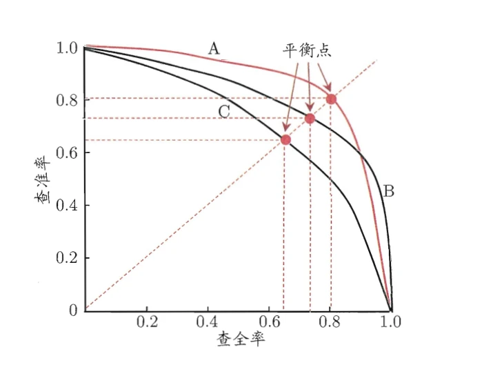
- ROC 曲线（受试者工作特征曲线）：横轴是 FPR，纵轴是
TPR，展现了模型在不同阈值下的表现，曲线必定经过 \((0,0)\) 和 \((1,1)\) 两个点，且越靠左上角越好。
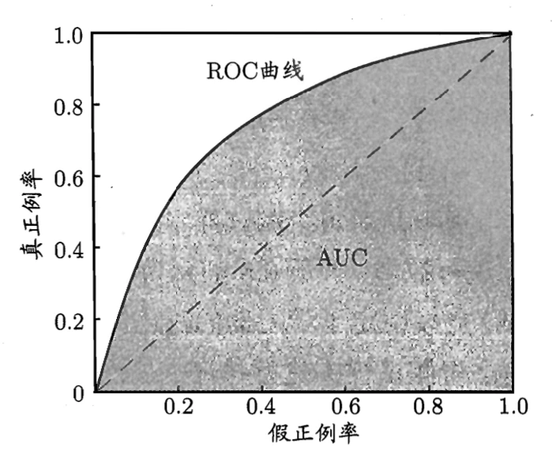
- AUC（AUROC, Area Under ROC Curve）：ROC
曲线下的面积（0.5~1.0
之间），对样本极度不平衡具有极强的抗干扰能力。
- TPR（真正例率）：即召回率/查全率 \[ \mathrm{TPR} = \frac{TP}{TP + FN} \]
- FPR（假正例率）：在所有真实的负例中，被误判为正例的比例。 \[ \mathrm{FPR} = \frac{FP}{FP + TN} \]
机器学习数据集划分方法
- 划分法则：
- 分层抽样（Stratified Sampling）：分类任务尤其是数据不平衡时必须使用，确保训练/测试集中各类别比例与整体一致。
- 时间序列划分（Time Series Split）：凡是具有时间属性的数据（如股票、天气），严禁随机打乱交叉验证，必须严格用过去预测未来，防止“数据穿越/泄露”。
留出法（Holdout Method）
- 原理：直接将数据集随机切分为互斥的集合（\(D_{Train}: D_{Test}\) 一般为 \(2:1 \sim 4:1\)）
- 优缺点：操作最简单，计算开销小；但由于单次随机划分，评估结果可能有较大方差。
- 适用场景：海量数据集（如深度学习）。
K 折交叉验证法（K-Fold Cross-Validation）
- 原理：将数据随机平分成 \(K\) 份（通常 \(K=10\) 或 \(5\)）。每次拿 \(1\) 份做测试，剩下 \(K-1\) 份做训练。重复 \(K\) 次，取结果的平均值。
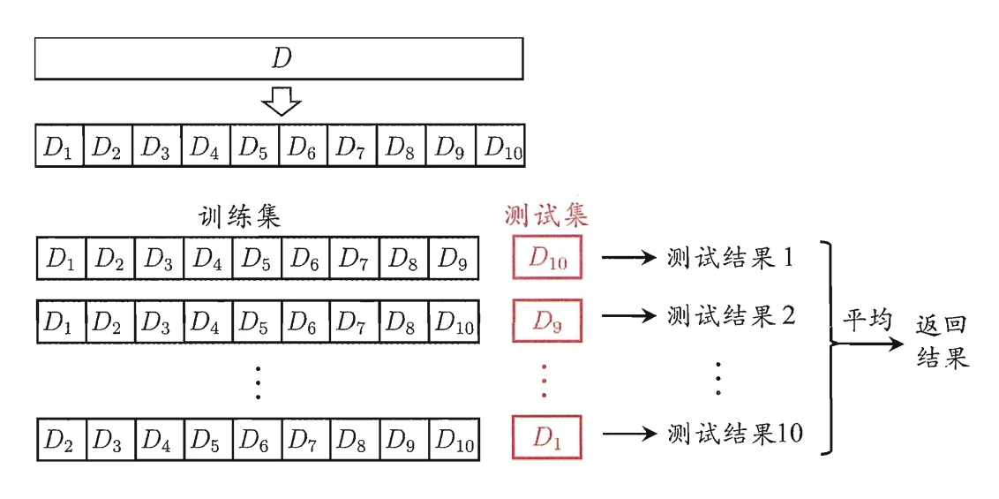
- 优缺点：评估结果非常稳定可靠，充分利用了数据；但计算成本是留出法的 \(K\) 倍。
- 适用场景：中小型数据集，或需要精细调参时。
留一法（Leave-One-Out, LOO）
- 原理：交叉验证的极端特例。假设有 \(N\) 个样本，则取 \(K+N\)，每次只留 \(1\) 个做测试，剩下 \(N-1\) 个做训练，重复 \(N\) 次。
- 优缺点：评估结果极其准确；但在数据量稍大时，算力成本是天文数字。
- 适用场景：极其稀少的数据集（如几十例罕见病数据）。
自助法（Bootstrapping）
- 原理：基于有放回的随机抽样，重复 \(m\) 次（\(m\) 通常与原数据集大小相同）得到子数据集，由于样本始终不被抽到的概率 \(\lim_{m \to \infty} (1 - \frac{1}{m})^m = e^{-1} \approx 0.368\)，因此这个子数据集约包含原数据集 \(63.2\%\) 的样本，将其作为训练集，剩下的 \(36.8\%\) 样本作为测试集，也称为“包外数据（Out-of-Bag）”。
- 优缺点：能在数据极少时有效扩充训练集丰富度，是“随机森林”算法的核心基础；但改变了原数据分布，可能引入偏差。
- 适用场景：数据集极小，或构建集成学习模型时。
线性算法
基本形式
给定 \(d\) 维特征 \(\mathbf{x} = (x_1, x_2, \dots, x_d)\)，线性算法假设预测结果是特征的线性组合：\(f(\mathbf{x}) = w_1x_1 + w_2x_2 + \dots + w_dx_d + b = \mathbf{w}^T\mathbf{x} + b\)，其中 \(\mathbf{w}\) 是权重向量，\(b\) 是偏置项，只要学得到合适的 \(\mathbf{w}\) 和 \(b\)，就能用这个线性函数来进行预测。
线性回归
- 原理：寻找一条直线（或超平面），使得所有真实数据点到该直线的预测误差平方和（均方误差
MSE）达到最小，这被称为最小二乘法（Least
Squares）。
- 当噪声为加性且符合零均值高斯分布时，最小二乘法等价于最大似然估计。
- 取平方：
- 避免正负误差互相抵消
- 严重惩罚偏离较大的异常点
- 平方函数平滑且可导，方便求解
一元简单线性回归
模型假设：\(f(x_i) = w x_i + b\)
目标函数：均方误差 \(E(w, b) = \sum_{i=1}^{n}(f(x_i) - y_i)^2 = \sum_{i=1}^{n}(y_i - w x_i - b)^2\)
目标：为了让真实数据点到该直线的预测误差平方和最小，即最小化均方误差，求解 \[ (w^*, b^*) = \arg\min_{w, b} E(w, b) \]
求解：最小二乘法：为了最小化均方误差，分别对 \(w\) 和 \(b\) 求偏导并令其等于 0： \[ \begin{aligned} \frac{\partial E}{\partial w} &= -2\sum_{i=1}^{n} x_i (y_i - w x_i - b) = 0 \\ \frac{\partial E}{\partial b} &= -2\sum_{i=1}^{n} (y_i - w x_i - b) = 0 \end{aligned} \]
解得闭式解 \[ w^* = \frac{\sum_{i=1}^{n} y_i(x_i - \bar{x})}{\sum_{i=1}^{n} (x_i - \bar{x})^2},\quad b^* = \frac{1}{n} \sum_{i=1}^{n} (y_i - w^* x_i) \]
多元线性回归
现实中特征极多，用矩阵演算不仅简洁，而且计算机底层可以直接并行计算。
- 模型假设：\(f(\mathbf{x}_i) = w_1 x_{i1} + w_2 x_{i2} + \dots
+ w_d x_{id} + b\)，其中 \(x_{ij}\) 是第 \(i\) 个样本的第 \(j\) 个特征，则可以表示为矩阵形式 \(f(\mathbf{X}) = \mathbf{Xw} =
\mathbf{\hat{y}}\)，其中：
- \(\mathbf{X}_{n\times (d+1)}\) 是特征矩阵，其中 \(n\) 是样本数，\(d+1\) 是因为为了吸收偏置项 \(b\)，需要在矩阵中添加一列全为 1 的特征。
- \(\mathbf{w}_{(d+1) \times 1}\) 是权重向量，包含了 \(b\) 和所有权重 \(w_j\)。
- \(\mathbf{y}_{n \times 1}\) 是真实标签向量。
- 目标函数：均方误差，用矩阵形式表示为： \[ \begin{aligned} E(\mathbf{w}) &=(\mathbf{y} - \mathbf{\hat{y}})^T(\mathbf{y} - \mathbf{\hat{y}}) = (\mathbf{y} - \mathbf{Xw})^T(\mathbf{y} - \mathbf{Xw}) \\ &= \mathbf{y}^T\mathbf{y} - \mathbf{y}^T\mathbf{Xw} - (\mathbf{Xw})^T\mathbf{y} + (\mathbf{Xw})^T(\mathbf{Xw}) \\ &= \mathbf{y}^T\mathbf{y} - 2\mathbf{w}^T\mathbf{X}^T\mathbf{y} + \mathbf{w}^T\mathbf{X}^T\mathbf{Xw} \end{aligned} \]
- 目标：为了最小化均方误差，求解 \[ \mathbf{w}^* = \arg\min_{\mathbf{w}} E(\mathbf{w}) \]
- 求解：
最小二乘法：根据矩阵求导法则 \(\frac{\partial(\mathbf{w}^T \mathbf{a})}{\partial \mathbf{w}} = \mathbf{a}\) 和 \(\frac{\partial(\mathbf{w}^T \mathbf{A} \mathbf{w})}{\partial \mathbf{w}} = 2\mathbf{A}\mathbf{w}\)（其中 \(A\) 是对称矩阵），对损失函数求导并令其等于 0： \[ \frac{\partial E}{\partial \mathbf{w}} = 0 - 2\mathbf{X}^T\mathbf{y} + 2\mathbf{X}^T\mathbf{Xw} = 0 \]
若 \(\mathbf{X}^T\mathbf{X}\) 满秩或正定，则可以求逆得到： \[ \mathbf{X}^T\mathbf{Xw} = \mathbf{X}^T\mathbf{y} \implies \mathbf{w} =(\mathbf{X}^T\mathbf{X})^{-1}\mathbf{X}^T\mathbf{y} \]
梯度下降法：当特征维度过高或样本量过大时，求逆计算量巨大，此时可以使用梯度下降法迭代求解： \[ \mathbf{w} \leftarrow \mathbf{w} - \eta \frac{\partial E}{\partial \mathbf{w}} = \mathbf{w} - \eta (-2\mathbf{X}^T\mathbf{y} + 2\mathbf{X}^T\mathbf{Xw}) = \mathbf{w} + 2\eta (\mathbf{X}^T\mathbf{y} - \mathbf{X}^T\mathbf{Xw}) \]
其中 \(\eta\) 是学习率，控制每次更新的步长大小。通过不断迭代更新 \(\mathbf{w}\)，直到损失函数收敛或达到预设的迭代次数。
模拟退火法：通过引入温度参数 \(T\)，在每次迭代中添加随机扰动，以跳出局部最优解。随着迭代进行，逐渐降低温度 \(T\)，减少扰动的幅度，使算法逐渐收敛到全局最优解。
广义线性模型（GLM）
- 线性回归假设输出是输入特征的线性组合，但在很多实际问题中，输出与输入之间的关系可能是非线性的。广义线性模型通过引入链接函数（link function）来扩展线性模型，使其能够处理非线性关系。
- 模型假设：\(y=g^{-1}(\mathbf{w}^T\mathbf{x}+b)\)，其中 \(g\) 是链接函数，\(g^{-1}\) 是其逆函数。
线性分类
- 原理：线性分类算法试图找到一个超平面将不同类别的样本分开，使交叉熵损失函数最小。可以基于线性回归的思想，通过使预测值对应类别（非线性映射）来将分类问题转化为回归问题。
- 为了使真实分布与预测分布之间的距离最小，即最小化 KL 散度，等价于最大化似然函数（MLE），等价于最小化交叉熵损失函数。
- 考虑二分类任务，其输出标记 \(y \in \{0,
1\}\)，而线性回归模型产生的预测值 \(z =
\mathbf{w}^T\mathbf{x} + b\) 是实值，因此需要将实值 \(z\) 转换为 \(0/1\) 值。
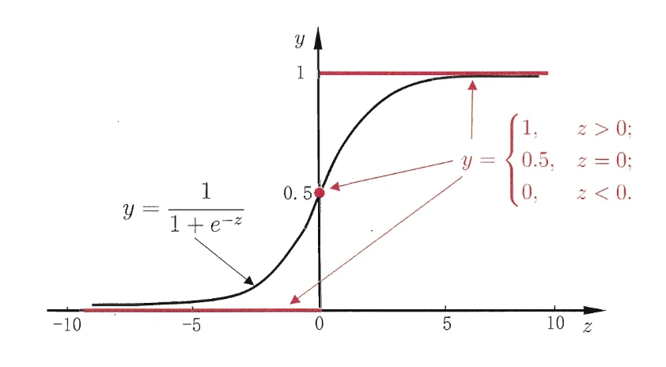
逻辑回归
- 模型假设：\(f_\beta(\mathbf{x}) =
\sigma(\mathbf{w}^T\mathbf{x} + b) = \frac{1}{1 +
e^{-(\mathbf{w}^T\mathbf{x} + b)}}\)，其中 \(\sigma(z)\) 是 Sigmoid 函数，将实值 \(z\) 映射到 \((0,
1)\) 区间，表示预测为正类的概率。
- \(\beta=(\mathbf{w}, b)\) 是模型参数的集合
- 输出 \(f_\beta(\mathbf{x})\) 解释为模型认为样本 \(\mathbf{x}\) 属于正类（\(y=1\)）的概率，即 \[ \begin{aligned} P(y=1|\mathbf{x},\beta) &= f_\beta(\mathbf{x}) = \frac{1}{1 + e^{-(\mathbf{w}^T\mathbf{x}+b)}} \\ P(y=0|\mathbf{x},\beta) &= 1 - f_\beta(\mathbf{x}) = \frac{e^{-(\mathbf{w}^T\mathbf{x}+b)}}{1 + e^{-(\mathbf{w}^T\mathbf{x}+b)}} \end{aligned} \]
- 目标函数：对于二分类任务，使用交叉熵损失函数（Cross-Entropy Loss）来衡量模型预测概率与真实标签之间的差距： \[ \begin{aligned} E(\beta) &= -\sum_{i=1}^{n} [y_i \log f_\beta(\mathbf{x}_i) + (1-y_i) \log (1 - f_\beta(\mathbf{x}_i))] \\ &= -\sum_{i=1}^{n} [y_i \log \frac{f_\beta(\mathbf{x}_i)}{1 - f_\beta(\mathbf{x}_i)} + \log (1 - f_\beta(\mathbf{x}_i))] \\ &= \sum_{i=1}^{n} [-y_i (\mathbf{w}^T\mathbf{x}_i + b) + \log (1 + e^{\mathbf{w}^T\mathbf{x}_i + b})] \\ &= \sum_{i=1}^{n} [-y_i (\beta^T\mathbf{x}_i) + \log (1 + e^{\beta^T\mathbf{x}_i})] \end{aligned} \]
- 目标：为了使正例样本被预测为正类概率尽可能大，而负例样本被预测为负类概率尽可能大，即最大化对数似然函数，等价于最小化交叉熵损失函数，也即求解 \[ \beta^* = \arg\min_{\beta} E(\beta) \]
- 求解：由于交叉熵损失函数是凸函数，可以使用梯度下降法或牛顿法等优化算法来求解最优参数 \(\beta^*\)。
线性判别分析（LDA）
思想：将给定训练样例设法投影到一条直线上，使得同类样例尽可能接近，而异类样例尽可能远离。
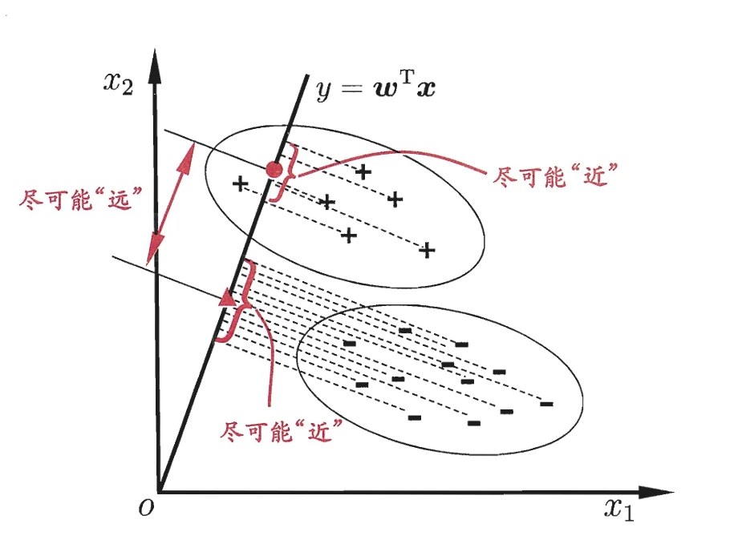
模型假设：以二分类为例
- 数据集 \(D = \{(\mathbf{x}_i, y_i)\}_{i=1}^n\)，\(y_i \in \{0, 1\}\)
- \(\mathbf{X}_0\) 和 \(\mathbf{X}_1\) 分别表示类别 0 和类别 1 的样本集合
- \(\mu_0\) 和 \(\mu_1\) 分别表示类别 0 和类别 1 的均值向量
- \(\Sigma_0\) 和 \(\Sigma_1\) 分别表示类别 0 和类别 1 的协方差矩阵
目标函数：广义瑞利商： \[ J(\mathbf{w}) = \frac{\left\lVert \mathbf{w}^T\mu_0-\mathbf{w}^T\mu_1\right\rVert^2}{\mathbf{w}^T(\Sigma_0 + \Sigma_1)\mathbf{w}} = \frac{\mathbf{w}^T S_B \mathbf{w}}{\mathbf{w}^T S_W \mathbf{w}} \]
其中 \(S_B = (\mu_0 - \mu_1)(\mu_0 - \mu_1)^T\) 是类间散度矩阵，\(S_W = \Sigma_0 + \Sigma_1\) 是类内散度矩阵。
目标：找到一个投影向量 \(\mathbf{w}\)，使得投影后的类间距离最大化，类内距离最小化，即最大化 \(J(\mathbf{w})\)，也即求解 \[ \mathbf{w}^* = \arg\max_{\mathbf{w}} J(\mathbf{w}) \]
多分类学习拆分策略
- 一对一（One-vs-One, OvO）：将 \(N\) 个类别两两配对，分别作为训练的正例和负例，产生 \(N(N−1)/2\) 个二分类任务。测试时，新样本交给所有分类器预测，最终结果通过投票法决定，即被预测得最多的类别作为最终类别。
- 一对其余（One-vs-Rest,
OvR）：每次将一个类别作为正例，其他所有类别作为负例，产生 \(N\)
个二分类任务。测试时，新样本交给所有分类器预测，若只有一个分类器预测为正例，则该样本属于该类别；若多个分类器预测为正例，则选择预测置信度最高的类别作为结果。
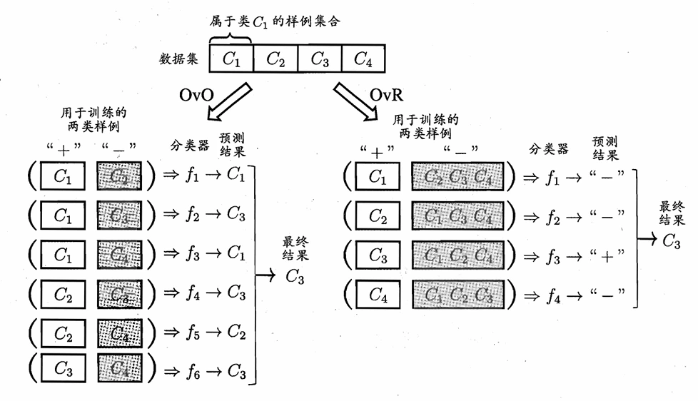
- 多对多（Many-vs-Many, MvM）：直接训练一个多分类模型，输出 \(N\) 个类别的概率分布，最终选择概率最高的类别作为结果。
感知器
感知器算法是最简单形式的前馈式人工神经网络，将输入直接经过权重关系映射到输出层，适用于线性可分的二分类问题。
- 由输入层和输出层组成，没有隐藏层，因此也被称为单层感知器。
- 只有输出层神经元进行激活函数处理，即只拥有一层功能神经元。
模型假设：\(f(\mathbf{x}) = \mathrm{sign}(\mathbf{w}^T\mathbf{x} + b)\)，其中 \(\mathrm{sign}(z) = \begin{cases}1, & z \geq 0 \\ 0, & z < 0 \end{cases}\)，表示预测类别为正类或负类。
特点：
- 输入为线性函数
- 输出或活性函数为阈值或 S 型函数
- 多用于解决线性模式识别问题
目标函数：感知器算法的目标是找到一个超平面将不同类别的样本分开，即使得所有正例样本被正确分类为正类，所有负例样本被正确分类为负类。可以定义感知器损失函数为： \[L(\mathbf{w}, b) = -\sum_{i=1}^{m} y_i (\mathbf{w}^T\mathbf{x}_i + b)\]
优化方法：感知器算法使用随机梯度下降（SGD）来优化损失函数。在每次迭代中，算法随机选择一个误分类的样本，并更新权重和偏置。具体来说，对于每个误分类的样本 \((\mathbf{x}_i, y_i)\)，权重和偏置的更新规则为： \[ \mathbf{w} \leftarrow \mathbf{w} + \eta\cdot (y_i-f(\mathbf{x}_i))\cdot \mathbf{x}_i \]
其中，\(\eta\) 是学习率，用于控制每次更新的步长。
收敛性：如果数据集是线性可分的，感知器算法一定能够找到一个超平面将不同类别的样本分开，并且在有限次迭代内收敛；如果数据集是线性不可分的，算法将无法收敛，即可能发生振荡。
- 图中 a-c 线性可分；d 线性不可分。
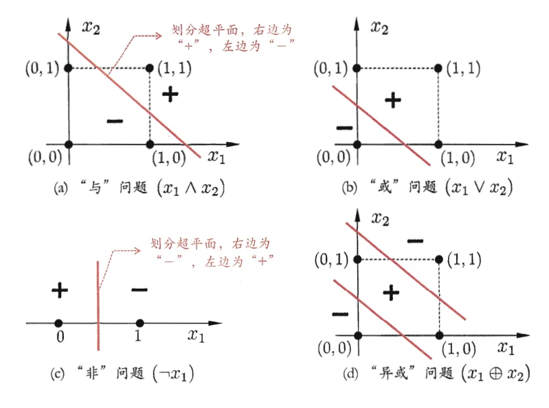
非线性算法
神经网络（Neural Networks, NN）
M-P 神经元模型与前馈神经网络（FNN）
- M-P
神经元模型：接收来自几个其他神经元传递的输入信号，通过带权重的的连接进行加权求和，与神经元阈值进行比较后通过激活函数输出结果。
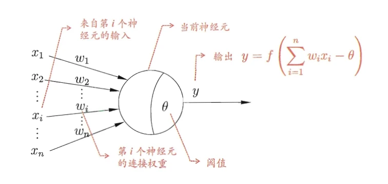
- 权重：连接输入层和输出层的权重，表示输入信号的重要程度
- 阈值：决定神经元是否被激活的临界值
- 激活函数：将加权求和的结果进行非线性变换，常用的激活函数包括阶跃函数、Sigmoid
函数、ReLU 函数和 Tanh 函数等：
- Sigmoid 函数：\(f(z) = \frac{1}{1 + e^{-z}}\)
- ReLU 函数：\(f(z) = \max(0, z)\)
- Tanh 函数：\(f(z) = \frac{e^z - e^{-z}}{e^z + e^{-z}}\)
- 前馈神经网络（Feedforward Neural Network,
FNN）：由输入层、一个或多个隐藏层和输出层组成，信息在网络中单向流动，每层神经元与下一层神经元全互连，神经元之间不存在同层连接，也不存在跨层连接。（一般而言，称“X
层神经网络”时，X 不包含输入层）
- 输入层：接收外界输入的特征数据
- 隐藏层 & 输出层：通过权重连接进行信息传递和处理
- 输出层：输出最终的预测结果
多层感知器网络（Multi-layer Perceptron, MLP）
- 感知器：既可以视为单层神经网络，也可以视为由输入层和输出层组成的前馈式神经网络，但只能处理线性可分的二分类问题。
- 多层感知器：前馈神经网络的一种
- 主要功能：
- 实现任意逻辑函数
- 解决非线性模式识别问题：用一个特定的输出矢量将它与输入矢量联系起来；把输入矢量以所定义的合适方式进行分类
- 逼近从 \(R^n\) 到 \(R^m\) 的任意连续映射：用输入矢量和相应的输出矢量训练一个网络逼近一个函数
- 网络结构：
- 包含一个或多个隐藏层
- 隐藏层激活函数通常为非线性函数，因此可以处理非线性问题
- 输出层通常采用线性函数
- 示例：输入 4 维特征向量，输出 2
维向量，包含两个隐藏层，其中第一个隐藏层包含 3
个神经元，第二个隐藏层包含 2 个神经元
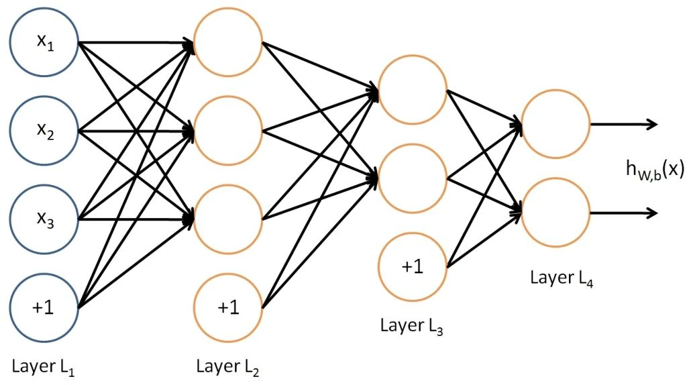
- 激活函数：对于 MLP 网络的每一个神经元，\(\mathbf{x}\) 为输入，输出为 \(h_{\mathbf{W},b}(\mathbf{x})=f(\mathbf{W}^\top
\mathbf{x}+\mathbf{b})\)，其中 \(\mathbf{W}\) 是权重向量，\(\mathbf{b}\) 是偏置项，\(f\) 是激活函数。
- MLP 网络的输出层通常采用线性函数，隐藏层激活函数通常选择 Sigmoid 函数
- 深度学习中的深层网络的隐藏层激活函数通常选择 ReLU 函数，输出层激活函数根据具体任务选择，如分类任务常用 Softmax 函数
- 主要功能：
- Softmax
函数：将输出层的线性输出转换为概率分布，公式为 \(f(z_i) = \frac{e^{z_i}}{\sum_{j}
e^{z_j}}\)，其中 \(z_i\)
是输出层的第 \(i\) 个神经元的线性输出。
- 特点：输出值在 (0, 1) 之间，且所有输出值的和为 1，适用于多分类问题
误差逆传播算法（Back Propagation, BP）
核心思想：信号正向传播，误差反向传播。
- 正向传播过程中，输入信息从输入层经隐含层逐层计算传向输出层，每一层神经元的状态只影响下一层神经元的状态。
- 如果在输出层未得到期望的输出，则计算输出层的误差变化值并反向传播，通过网络将误差信号沿原来的连接通路反传回来，更新各层神经元的权值直至达到期望目标。
训练过程：
- 训练集：\(\{(\mathbf{x}_1,\mathbf{y}_1),\cdots,(\mathbf{x}_m,\mathbf{y}_m)\}\) 共 \(m\) 个样本
- 损失函数：\(J(\mathbf{W},\mathbf{b}; \mathbf{x},\mathbf{y})=\frac{1}{2}\left\|h_{\mathbf{W},\mathbf{b}}(\mathbf{x})-\mathbf{y}\right\|^2\)，其中 \(h_{\mathbf{W},\mathbf{b}}(\mathbf{x})\) 是网络的输出，\(\mathbf{y}\) 是样本的真实标签
- 总体 loss 为 \(J(\mathbf{W},\mathbf{b})=\frac{1}{m}\sum_{i=1}^m J(\mathbf{W},\mathbf{b}; \mathbf{x}_i,\mathbf{y}_i)\)
优化目标：最小化损失函数，即 \[ \arg\min_{\mathbf{W},\mathbf{b}} J(\mathbf{W},\mathbf{b}) = \arg\min_{\mathbf{W},\mathbf{b}} \frac{1}{m}\sum_{i=1}^m \frac{1}{2}\left\|h_{\mathbf{W},\mathbf{b}}(\mathbf{x}_i)-\mathbf{y}_i\right\|^2 \]
信号前向传播
- 符号定义：
- \(W_{ij}^{(l)}\)：第 \(l\) 层的 \(j\) 单元与第 \(l+1\) 层的 \(i\) 单元的连接参数
- \(b_{i}^{(l)}\)：第 \(l+1\) 层第 \(i\) 单元的偏置参数
- \(z_{i}^{(l)}\)：第 \(l\) 层第 \(i\) 单元输入的加权和，即 \[ z_{i}^{(l)}=\sum_{j} W_{ij}^{(l-1)}a_{j}^{(l-1)}+b_{i}^{(l-1)} \]
- \(a_{i}^{(l)}\)：第 \(l\) 层第 \(i\) 单元输出的激活值，即 \[ a_{i}^{(l)}=f(z_{i}^{(l)}) \]
- \(h_{\mathbf{W},\mathbf{b}}(\mathbf{x})_i\)：输出层第 \(i\) 单元的输出值，对应标签 \(y_i\)
- 示例：
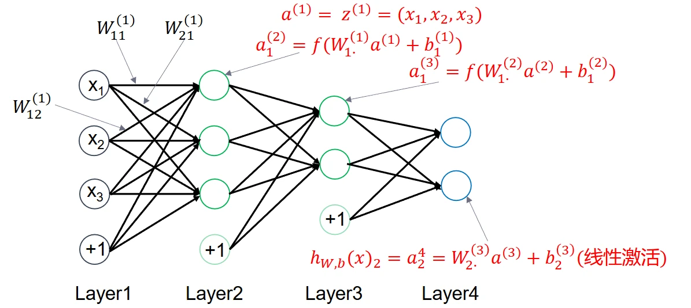
- 符号定义：
误差反向传播
- 残差 \(\delta_{i}^{(l)}\)：每个单元的梯度，即 \(J\) 对 \(l\) 层第 \(i\) 个单元输入加权和 \(z_{i}^{(l)}\) 的偏导，它表明该节点对最终输出值的残差产生了多少影响。 \[ \delta_{i}^{(l)}=\frac{\partial}{\partial z_{i}^{(l)}}J=\frac{\partial}{\partial z_{i}^{(l)}}\frac{1}{2}\left\|h_{W,b}(x)-y\right\|^2 \]
- 示例：
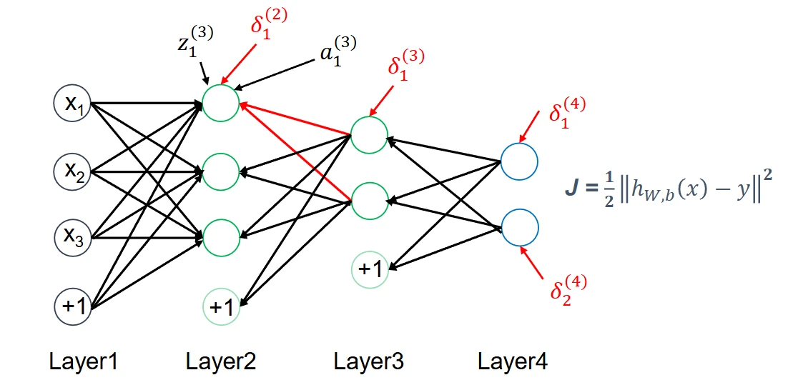
输出层残差： \[ \begin{aligned} \delta_{i}^{(4)} &= \frac{\partial}{\partial z_{i}^{(4)}} \frac{1}{2}\left\|h_{W,b}(x)-y\right\|^2 \\ &= \frac{\partial}{\partial z_{i}^{(4)}} \frac{1}{2}\sum_{j=1}^2(z_j^{(4)}-y_j)^2 \\ &= z_i^{(4)}-y_i \end{aligned} \]
隐藏层残差（链式法则）： \[ \begin{aligned} \delta_1^{(3)}&=\frac{\partial}{\partial z_1^{(3)}}J \\ &=\frac{\partial J}{\partial a_1^{(3)}} \cdot \frac{\partial a_1^{(3)}}{\partial z_1^{(3)}} \\ &=\left(\frac{\partial J}{\partial z_1^{(4)}} \cdot \frac{\partial z_1^{(4)}}{\partial a_1^{(3)}}+\frac{\partial J}{\partial z_2^{(4)}} \cdot \frac{\partial z_2^{(4)}}{\partial a_1^{(3)}}\right) \cdot f'\left(z_1^{(3)}\right)\\ &=\left(\delta_1^{(4)} \cdot \frac{\partial z_1^{(4)}}{\partial a_1^{(3)}}+\delta_2^{(4)} \cdot \frac{\partial z_2^{(4)}}{\partial a_1^{(3)}}\right) \cdot f'\left(z_1^{(3)}\right)\\ &=\left(\delta_1^{(4)} \cdot W_{11}^{(3)}+\delta_2^{(4)} \cdot W_{21}^{(3)}\right) \cdot \left(1-a_1^{(3)}\right) \cdot a_1^{(3)} \end{aligned} \]
同理，对于第二层隐藏层的残差： \[ \delta_1^{(2)}=\frac{\partial}{\partial z_1^{(2)}}J=\left(\delta_1^{(3)} \cdot W_{11}^{(2)}+\delta_2^{(3)} \cdot W_{21}^{(2)}\right) \cdot \left(1-a_1^{(2)}\right) \cdot a_1^{(2)} \]
权重更新算法：注意到 \(z_{i}^{(l+1)}=\sum_{j=1}^{S_l} W_{ij}^{(l)}a_j^{(l)}+b_i^{(l)}\)，有 \[ \begin{aligned} &\frac{\partial}{\partial W_{ij}^{(l)}}J=\frac{\partial J}{\partial z_i^{(l+1)}} \cdot \frac{\partial z_i^{(l+1)}}{\partial W_{ij}^{(l)}}=\delta_i^{(l+1)} \cdot a_j^{(l)} \\ &\frac{\partial}{\partial b_i^{(l)}}J=\frac{\partial J}{\partial z_i^{(l+1)}} \cdot \frac{\partial z_i^{(l+1)}}{\partial b_i^{(l)}}=\delta_i^{(l+1)} \end{aligned} \]
因此，权重更新公式为： \[ \begin{aligned} \mathbf{W} &= \mathbf{W} - \alpha \frac{\partial J(\mathbf{W},\mathbf{b})}{\partial \mathbf{W}} \\ \mathbf{b} &= \mathbf{b} - \alpha \frac{\partial J(\mathbf{W},\mathbf{b})}{\partial \mathbf{b}} \end{aligned} \]
算法基本流程：
- 输入训练样本，初始化权值矩阵
- 正向传播计算输出
- 计算输出层残差并反向传播计算隐藏层残差
- 根据残差计算权值更新量，更新权值矩阵
- 重复步骤 2-4 直至满足终止条件，如：
- 固定迭代次数后停止
- Early Stopping：验证集上持续 \(k\) 次迭代无准确率提升则停止
支持向量机（Support Vector Machine, SVM）
- 支持向量（Support Vector）：支持向量为分界面附近的数据点，是最难分类的数据点。
- 核心思想：用于解决线性可分的二分类问题，寻找一个最大化类间距离的分界面。分类面由少数支持向量决定。
线性可分
定义超平面 \(H_1: \mathbf{w}^\top \cdot \mathbf{x} + b = 1\) 和 \(H_2: \mathbf{w}^\top \cdot \mathbf{x} + b = -1\)，分界面为 \(\mathbf{w}^\top \cdot \mathbf{x} + b = 0\)。
- 则正例样本（\(y_i=+1\)）满足 \(\mathbf{w}^\top \cdot \mathbf{x} + b \geq 1\)，反例样本（\(y_i=-1\)）满足 \(\mathbf{w}^\top \cdot \mathbf{x} + b \leq -1\)，是支持向量时取等。
- 示例：
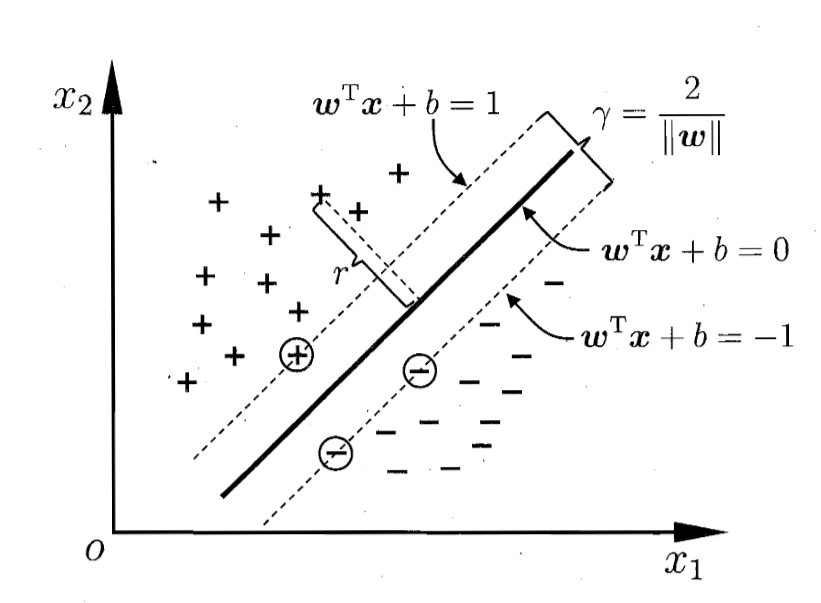
\(H_1\) 与 \(H_2\) 到中心分界面的距离均为 \[ \frac{|\mathbf{w}^\top \cdot \mathbf{x} + b|}{\|\mathbf{w}\|} = \frac{1}{\|\mathbf{w}\|} \]
进而，\(\mathrm{Margin}=\frac{2}{\|\mathbf{w}\|}\)。
最优分界面相当于最大化 \(\mathrm{Margin}\)，等价于在约束条件 \(y_i(\mathbf{w}^\top \cdot \mathbf{x}_i + b) = 1\) 下最小化 \(\frac{1}{2}\|\mathbf{w}\|^2\)，即 \[ \arg\min_{\mathbf{w},b} \frac{1}{2}\|\mathbf{w}\|^2 \quad \text{s.t.}\quad y_i(\mathbf{w}^\top \cdot \mathbf{x}_i + b) - 1 = 0 \]
可以通过拉格朗日乘数法来求解，构造拉格朗日函数： \[ \begin{aligned} L &\triangleq \frac{1}{2}\|\mathbf{w}\|^2 - \left(\sum_{i=1}^l \alpha_i \left(y_i \left(\mathbf{w}^\top \cdot \mathbf{x}_i + b\right) - 1 \right)\right) \\ &= \frac{1}{2}\|\mathbf{w}\|^2 - \sum_{i=1}^l \alpha_i y_i \left(\mathbf{w}^\top \cdot \mathbf{x}_i + b\right) + \sum_{i=1}^l \alpha_i \end{aligned} \]
其中 \(\alpha_i \geq 0\) 是拉格朗日乘子。
对 \(\mathbf{w}\) 和 \(b\) 求导并令导数为 0，可得： \[ \mathbf{w}=\sum_{i=1}^l \alpha_i y_i \mathbf{x}_i,\quad \sum_{i=1}^l \alpha_i y_i=0 \]
问题转化为更易求解的对偶问题： \[ \arg\max_{\alpha_i} \ L=\sum \alpha_i - \frac{1}{2}\sum \alpha_i \alpha_j y_i y_j(\mathbf{x}_i^\top \cdot \mathbf{x}_j) \quad \text{s.t.}\begin{cases} \sum \alpha_i y_i=0 \\ \forall i, \alpha_i \geq 0 \end{cases} \]
- 约束条件（KKT 条件）： \[ \begin{cases} \alpha_i \geq 0 \\ y_i f(x_i)-1 \geq 0 \\ \alpha_i\left(y_i f(x_i)-1\right)=0 \\ \end{cases} \]
- 重要性质：模型训练完后，大部分的训练样本都不需要保留，最终模型仅与支持向量有关，因此仅需保留支持向量（即 \(\alpha_i>0\) 的样本）即可进行分类预测。
采用二次规划（Quadratic Programming）求解拉格朗日乘子 \(\alpha_i\)，进而得到 \(\mathbf{w}\) 和 \(b\)，最终得到分类模型 \[ f(\mathbf{x})=\mathbf{w}^\top \cdot \mathbf{x} + b = \sum_{i=1}^l \alpha_i y_i \mathbf{x}_i^\top \cdot \mathbf{x} + b \]
- 二次规划一般求解方法：SMO（sequential minimal
optimization）
- 基本思路：不断执行如下两个步骤直至收敛
- 选取一对需更新的变量 \(\alpha_i\) 和 \(\alpha_j\)；
- 固定 \(\alpha_i\) 和 \(\alpha_j\) 以外的参数，求解对偶问题更新
\(\alpha_i\) 和 \(\alpha_j\)。此时对偶问题的约束变为： \[
\alpha_i y_i + \alpha_j y_j = -\sum_{k \neq i,j} \alpha_k y_k, \alpha_i
\geq 0, \alpha_j \geq 0
\]
- 用一个变量表示另一个变量，回代入对偶问题可得一个单变量的二次规划，该问题具有闭式解。
- 通过带入支持向量求解便宜项 \(b\)。
- 变量选择策略
- 第一个变量：违背 KKT 条件程度大的变量
- 第二个变量：使目标函数增长最快的变量，常用启发式为使选取的两样本间距最大。
- 基本思路：不断执行如下两个步骤直至收敛
- 二次规划一般求解方法：SMO（sequential minimal
optimization）
线性不可分
软间隔：现实问题大多线性不可分，无法直接找到满足约束条件的分界面。因此引入软间隔概念，允许少量样本不满足约束条件，即允许分类器在少量样本上犯错。
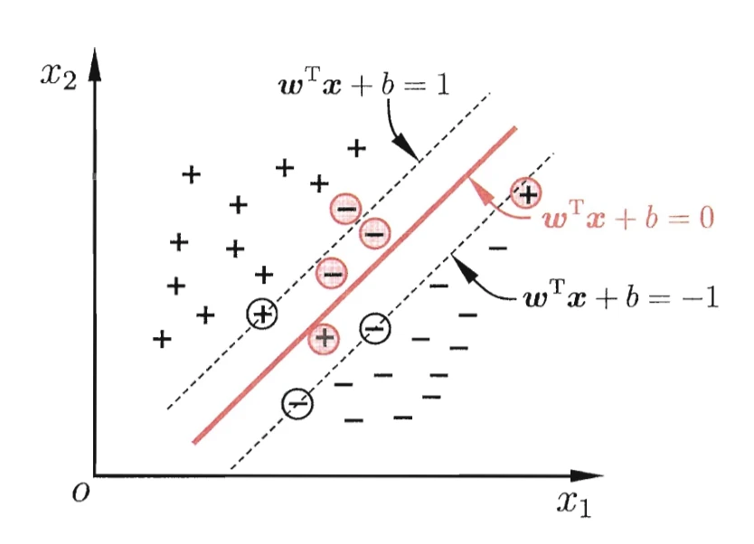
基本想法：最大化间隔的同时，让不满足约束的样本应尽可能少，即 \[ \arg\min_{\mathbf{w},b} \frac{1}{2}\|\mathbf{w}\|^2 + C \sum_{i=1}^m \mathcal{L}\left(y_i\left(\mathbf{w}^\top \phi(\mathbf{x}_i)+b\right)-1\right) \]
其中正则化常数 \(C>0\)：如果 \(C \to \infty\)，则等价于要求所有的样本点都分类正确，否则就允许一部分极少的样本分类错误。
损失函数 \(\mathcal{L}\)：采用数学性质较好的替代损失函数（一般是 0/1 损失函数的上界）
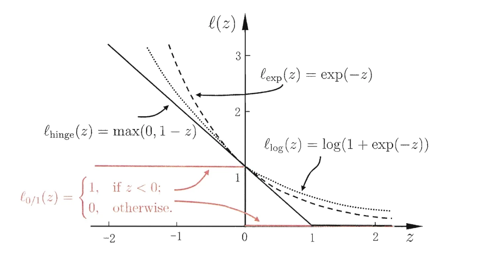
软间隔 SVM 模型
采用 Hinge 损失，原始问题变为： \[ \arg\min_{\mathbf{w},b} \frac{1}{2}\|\mathbf{w}\|^2 + C \sum_{i=1}^m \max\left(0,1-y_i\left(\mathbf{w}^\top \phi(\mathbf{x}_i)+b\right)\right) \]
引入每个样本对应的松弛变量 \(\xi_i \geq 0\) 用以表征该样本不满足约束 \(y_i f(x_i) \geq 1\) 的程度，则问题转化为： \[ \arg\min_{\mathbf{w},b,\xi_i} \frac{1}{2}\|\mathbf{w}\|^2 + C \sum_{i=1}^m \xi_i \quad \text{s.t.} \begin{cases} y_i\left(\mathbf{w}^\top \mathbf{x}_i + b\right) \geq 1 - \xi_i \\ \forall i, \xi_i \geq 0 \end{cases}\]
拉格朗日求解：构造拉格朗日函数： \[ L(\mathbf{w},b,\alpha,\xi,\mu)=\frac{1}{2}\|\mathbf{w}\|^2 + C \sum_{i=1}^m \xi_i + \sum_{i=1}^m \alpha_i\left(1-\xi_i-y_i\left(\mathbf{w}^\top \mathbf{x}_i + b\right)\right) - \sum_{i=1}^m \mu_i \xi_i\]
其中 \(\alpha_i \geq 0, \mu_i \geq 0\) 是拉格朗日乘子。
对 \(\mathbf{w}\)、\(b\)、\(\xi_i\) 求导并令导数为 0，得到： \[ \mathbf{w}=\sum_{i=1}^m \alpha_i y_i \mathbf{x}_i ,\quad \sum_{i=1}^m \alpha_i y_i=0 ,\quad C-\alpha_i-\mu_i=0 \]
问题转化为对偶问题： \[ \arg\min_{\alpha_i} \frac{1}{2}\sum_{i=1}^m\sum_{j=1}^m \alpha_i \alpha_j y_i y_j \phi(\mathbf{x}_i)^\top \phi(\mathbf{x}_j) - \sum_{i=1}^m \alpha_i \quad \text{s.t.} \begin{cases} \sum_{i=1}^m \alpha_i y_i=0 \\ \forall i, 0 \leq \alpha_i \leq C \end{cases} \]
- KKT 条件 \[ \begin{cases} \alpha_i \geq 0, \mu_i \geq 0 \\ y_i f(\mathbf{x}_i)-1+\xi_i \geq 0 \\ \alpha_i\left(y_i f(\mathbf{x}_i)-1+\xi_i\right)=0 \\ \xi_i \geq 0, \mu_i \xi_i=0 \end{cases} \]
- 样本分类特征：对任意训练样本 \((\mathbf{x}_i,y_i)\)，总有 \(\alpha_i=0\) 或 \(y_i f(\mathbf{x}_i)=1-\xi_i\)：
- 若 \(\alpha_i=0\)，则该样本不会对 \(f(\mathbf{x})\) 有任何影响；
- 若 \(\alpha_i>0\)，则该样本是支持向量：
- 若 \(\alpha_i<C\)，则 \(\mu_i>0\)，进而 \(\xi_i=0\)，样本恰在最大间隔边界上；
- 若 \(\alpha_i=C\)，则 \(\mu_i=0\)，若 \(\xi_i \leq1\) 样本落在最大间隔内部，若 \(\xi_i>1\) 样本被错误分类。
正则化
- 支持向量机学习模型的一般形式 \[
\arg \min_f \Omega(f) + C \sum_{i=1}^m l\left(y_i,f(x_i)\right)
\]
- 首项：结构风险，描述模型的某些性质
- 第二项：经验风险，描述模型与训练数据的契合程度
- 通过替换上面两个部分，可以得到许多其他学习模型（如对数几率回归 Logistic Regression）。
- 正则化可理解为一种“罚函数法”，即对不希望得到的结果施以惩罚，从而使得优化过程趋向于希望目标。从贝叶斯估计的角度来看，正则化项可认为是提供了模型的先验概率。
核函数
投影：将低维线性不可分的样本投影到高维空间，使其在高维空间线性可分，帮助解决非线性问题。
核函数：无需显式进行高维投影，直接通过核函数计算高维空间的内积，将对偶问题中的内积替换为核函数即可。 \[ K\left(\mathbf{x}_i,\mathbf{x}_j\right)=\Phi\left(\mathbf{x}_i\right) \cdot \Phi\left(\mathbf{x}_j\right) \]
对偶问题改写为： \[ L_D=\sum \alpha_i - \frac{1}{2}\sum \alpha_i \alpha_j K(\mathbf{x}_i,\mathbf{x}_j) y_i y_j \]
典型核函数
- 多项式核：\(K(\mathbf{x}_1,\mathbf{x}_2)=(\mathbf{x}_1 \cdot \mathbf{x}_2 + 1)^p\)
- 高斯核（RBF）：\(K(\mathbf{x}_1,\mathbf{x}_2)=\exp\left\{-\frac{\|\mathbf{x}_1-\mathbf{x}_2\|^2}{2\sigma^2}\right\}\)
- S 型核：\(K(\mathbf{x}_1,\mathbf{x}_2)=\tanh(\kappa \mathbf{x}_1 \cdot \mathbf{x}_2 - \delta)\)
分类模型：对于一个测试样本 \(\mathbf{x}\)，其分类结果为 \[ f(\mathbf{x})=\sum_{i=1}^l \alpha_i y_i K(\mathbf{x}_i,\mathbf{x}) + b \]
其中 \(\mathbf{x}_i\) 是支持向量，偏置项 \(b\) 可通过任一支持向量求解得到。
集成学习（Ensemble Learning）
- 算法要点：
- 从“独裁”到“群策群力”，由多个分类器共同决策
- 独裁：单一分类器决策，准确率有限
- 群策：多个分类器共同决策，通过投票等方式得到最终结果，准确率更高
- 根据所有分类器的决策结果得到最终的判决结果
- 没有一个分类器是完美的，不同分类器之间存在着互补
- 从“独裁”到“群策群力”，由多个分类器共同决策
- 核心问题：
- 如何设计能够提供互补结果的分类器？
- 如何统筹各个分类器的结果？
BAGGING（Bootstrap Aggregating）算法
- 流程：
- 从整体训练样本中有放回抽样，生成 \(m\) 个不同的子训练集（正例、反例各取若干）
- 用每个子训练集训练一个基模型，得到 \(m\) 个基模型
- 测试集输入所有基模型得到预测结果
- 对 \(m\) 个预测结果进行投票，按照多数原则决定最终分类结果
- 优点：提升了泛化能力
- 缺点：
- 在训练样本较少的情况下，各子分类器的结果不稳定，对于训练样本的细微变化敏感
- 无法确切保证子分类器之间的互补性
Adaboost 算法
- 基本概念：
- 强分类器：根据训练样本能够提供任意复杂的分类面，在训练集中能够取得很高的分类正确率
- 弱分类器：根据训练样本能够提供比随机猜想高的分类正确率
- 样本权重：不同的样本识别难度不同，根据分类识别的难易程度确定样本的权重
- 总体思路（两个权重：样本权重和分类器权重）：
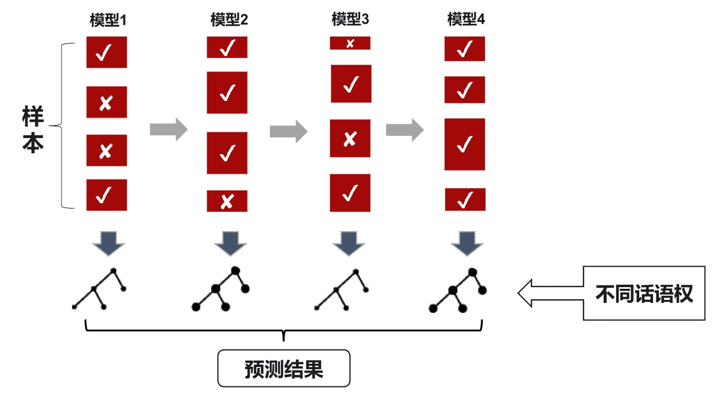
- 对整体训练样本不进行划分和重组，仅对训练集中的样本赋予不同的权重，权重越大表示该样本越难识别
- 每一次训练中，增加分类器错分样本的权重，减少正确识别样本的权重，实现子分类器互补
- 分类器结果统筹不采用简单多数原则，根据分类器的准确程度确定其“话语权”，进行加权求和得到最终分类结果
- 算法流程：
- 初始化训练集的样本权重分布
- 根据当前权重分布训练一个弱分类器 \(h_t\)
- 计算该弱分类器的训练误差 \(\varepsilon_t\)，进而确定其权重 \(\alpha_t\)
- 根据分类结果重新计算各样本的权重，错分样本权重提高，正确分类样本权重降低；
- \(t=t+1\)，重复步骤 2-4，生成 \(T\) 个弱分类器；
- 综合 \(T\) 个带权重的弱分类器结果，得到最终强分类器。
- 核心公式
- 分类误差计算： \[ \varepsilon_t=\sum_{i=1}^m d_t^{(i)}\left(1-\delta\left(y^{(i)},h_t\left(x^{(i)}\right)\right)\right), \quad\beta_t=\frac{\varepsilon_t}{1-\varepsilon_t} \]
- 分类器权重计算： \[ \alpha_t=\ln \frac{1}{\beta_t} \]
- 训练样本权重计算：\(Z_t\) 为归一化因子，保证权重和为 1 \[ d_{t+1}^{(i)}=\frac{1}{Z_t} d_t^{(i)} \beta_t^{\delta\left(y^{(i)},h_t\left(x^{(i)}\right)\right)} \]
- 最终分类结果输出： \[ H(x)=\mathrm{sign}\left[\sum_t \alpha_t h_t(x)\right] \]
- 优点：在降低训练误差的同时降低测试误差，每次迭代增加类间 Margin。
- 缺点：
- 对于离群点很敏感，因为离群点容易分错，会逐级影响后面产生的弱分类器，易过拟合。
- 训练计算量较大，因为每次迭代都要重新计算样本权重并训练一个新的弱分类器。
- 训练过程中无法并行化，耗时较长，因为每个弱分类器的训练依赖于前一个弱分类器的结果。
Bagging 与 Adaboost 区别
| 对比维度 | Bagging | Adaboost |
|---|---|---|
| 样本选择 | 训练集是在原始集中有放回选取的，各轮训练集之间独立 | 每一轮的训练集不变，仅调整样本在分类器中的权重 |
| 样例权重 | 使用均匀取样，每个样例的权重相等 | 根据错误率不断调整，错误率越大则权重越大 |
| 预测函数权重 | 所有预测函数的权重相等 | 分类误差小的分类器权重更大 |
| 并行计算 | 各个预测函数可以并行生成 | 各个预测函数只能顺序生成，后一个模型依赖前一轮结果 |
特征降维
- 为什么需要降维
- 解决维度诅咒问题
- 提升模型性能
- 降低计算成本
主成分分析（PCA）
核心思想
- 核心思想： 寻找一组正交的投影方向，通过最大化数据投影后的方差，保留数据的主要特征信息，从而提升坐标可分性，实现无监督的线性降维。
- 符号定义与预备知识
- 样本集：\(X = \{\mathbf{x}_1, \mathbf{x}_2, \cdots, \mathbf{x}_n\}\)，其中每个样本 \(\mathbf{x}_i \in \mathbb{R}^d\)，\(d\) 为原特征维度
- 投影方向：用单位向量 \(\mathbf{w} \in \mathbb{R}^d\) 表示，满足 \(\|\mathbf{w}\|^2 = \mathbf{w}^\top \mathbf{w} = 1\)。
- 样本均值：\(\bar{\mathbf{x}} = \frac{1}{n} \sum_{i=1}^n \mathbf{x}_i\)。
- 投影结果：样本 \(\mathbf{x}_i\) 在 \(\mathbf{w}\) 方向上的投影值为标量 \(z_i = \mathbf{w}^\top \mathbf{x}_i\)。
- 目标：为了最大化投影后的方差，即求解 \[ \mathbf{w} = \arg\max_{\mathbf{w}} \frac{1}{n} \sum_{i=1}^n (\mathbf{w}^\top \mathbf{x}_i - \bar{z})^2 \quad \text{s.t.} \quad \|\mathbf{w}\|^2=1 \]
推导核心
数据中心化：为了简化方差的计算，首先将数据中心化：令 \(\tilde{\mathbf{x}}_i = \mathbf{x}_i - \bar{\mathbf{x}}\)。此时投影后的均值 \(\bar{z} = \mathbf{w}^\top \left( \frac{1}{n} \sum_{i} \tilde{\mathbf{x}}_i \right) = 0\)。
目标函数简化： \[ \arg\max_{\mathbf{w}} \frac{1}{n} \sum_{i=1}^n (\mathbf{w}^\top \tilde{\mathbf{x}}_i)^2 \quad \text{s.t.} \quad \|\mathbf{w}\|^2=1 \]
矩阵化简与协方差矩阵：提取 \(\mathbf{w}\)，将目标函数改写为矩阵乘法形式： \[ \begin{aligned} & \frac{1}{n} \sum_{i=1}^n (\mathbf{w}^\top \tilde{\mathbf{x}}_i)^2 \\ =& \frac{1}{n} \sum_{i=1}^n (\mathbf{w}^\top \tilde{\mathbf{x}}_{i})(\tilde{\mathbf{x}}_{i}^\top \mathbf{w}) \\ =& \mathbf{w}^\top \left( \frac{1}{n} \sum_{i=1}^n \tilde{\mathbf{x}}_{i} \tilde{\mathbf{x}}_{i}^\top \right) \mathbf{w} \\ =& \mathbf{w}^\top \Sigma \mathbf{w} \end{aligned} \]
其中 \(\Sigma = \frac{1}{n} \sum_{i=1}^n \tilde{\mathbf{x}}_{i} \tilde{\mathbf{x}}_{i}^\top\) 是数据的协方差矩阵，对称且半正定，所有特征值 \(\lambda_j \ge 0\)。
拉格朗日乘子法求解：构造拉格朗日函数： \[ L(\mathbf{w}, \lambda) = \mathbf{w}^\top \Sigma \mathbf{w} - \lambda(\mathbf{w}^\top \mathbf{w} - 1) \]
对 \(\mathbf{w}\) 求导并令其为 0，得到： \[ \frac{\partial L}{\partial \mathbf{w}} = 2\Sigma \mathbf{w} - 2\lambda \mathbf{w} = 0 \implies \Sigma \mathbf{w} = \lambda \mathbf{w} \]
结论：最佳投影方向 \(\mathbf{w}\) 必须是协方差矩阵 \(\Sigma\) 的特征向量。此时，投影后的方差为： \[ \mathbf{w}^\top \Sigma \mathbf{w} = \mathbf{w}^\top (\lambda \mathbf{w}) = \lambda \mathbf{w}^\top \mathbf{w} = \lambda \|\mathbf{w}\|^2 = \lambda \]
则 \[ \mathbf{w} = \arg\max_{\mathbf{w}} \mathbf{w}^\top \Sigma \mathbf{w} = \max_{j} \lambda_j \]
实现步骤（降维至 \(k\) 维）
- 训练阶段（拟合 PCA 模型）
- 计算原训练数据的均值向量 \(\bar{\mathbf{x}}\)
- 对原数据进行特征中心化：\(\tilde{\mathbf{x}}_i = \mathbf{x}_i - \bar{\mathbf{x}}\)
- 计算协方差矩阵 \(\Sigma\)
- 对 \(\Sigma\) 进行特征值分解（或直接对中心化后的数据矩阵进行奇异值分解 SVD*）
- 将特征值按降序排列：\(\lambda_1 \ge \lambda_2 \ge \cdots \ge \lambda_d\)
- 选取前 \(k\) 个最大特征值对应的特征向量，按列拼接组成投影矩阵 \(\mathbf{W} = [\mathbf{w}_1, \mathbf{w}_2, \cdots, \mathbf{w}_k] \in \mathbb{R}^{d \times k}\)
- 推理阶段（对新数据降维）
- 使用训练阶段得到的均值向量 \(\bar{\mathbf{x}}\)，对新样本 \(\mathbf{x}_{new}\) 进行中心化：\(\tilde{\mathbf{x}}_{new} = \mathbf{x}_{new} - \bar{\mathbf{x}}\)
- 使用投影矩阵 \(\mathbf{W}\) 进行投影变换，得到降维后的 \(k\) 维特征：\(\mathbf{z}_{new} = \mathbf{W}^\top \tilde{\mathbf{x}}_{new}\)
Fisher 线性判别式分析（LDA）
核心思想
- 核心思想：寻找投影坐标轴，通过最大化类间距离、最小化类内散布度，从而提升分类可分性，实现有监督的线性降维。
两分类 LDA
目标函数：分子为类间距离，分母为类内散布度和： \[ J(\mathbf{v})=\frac{(\tilde{\mu}_1-\tilde{\mu}_2)^2}{\tilde{s}_1^2+\tilde{s}_2^2} \]
目标：为了最大化类间距离、最小化类内散布度和，即最大化 \(J(\mathbf{v})\)，也即求解 \[ \mathbf{v}^* = \arg\max_{\mathbf{v}} J(\mathbf{v}) \]
其中：
- \(\tilde{\mu}_j = \frac{1}{|C_j|} \sum_{\mathbf{x}_i\in C_j} \mathbf{v}^\top \mathbf{x}_i = \mathbf{v}^\top \mu_j\) 是类别 \(j\) 的投影均值
- \(\tilde{s}_j^2 = \sum_{\mathbf{x}_i\in C_j} (\mathbf{v}^\top \mathbf{x}_i - \tilde{\mu}_j)^2\) 是类别 \(j\) 的投影方差
最优化推导过程简述
- 定义：
- 类间散度矩阵 \(\mathbf{S}_B = (\mu_1 - \mu_2)(\mu_1 - \mu_2)^\top\)
- 类内散度矩阵 \(\mathbf{S}_W = \sum_{j=1}^2 \sum_{\mathbf{x}_i\in C_j} (\mathbf{x}_i - \mu_j)(\mathbf{x}_i - \mu_j)^\top = \mathbf{S}_1 + \mathbf{S}_2\)
- 将 \(J(\mathbf{v})\) 改写为矩阵形式： \[J(\mathbf{v}) = \frac{(\mathbf{v}^\top \mu_1 - \mathbf{v}^\top \mu_2)^2}{\sum_{j=1}^2 \sum_{\mathbf{x}_i\in C_j} (\mathbf{v}^\top \mathbf{x}_i - \mathbf{v}^\top \mu_j)^2} = \frac{\mathbf{v}^\top \mathbf{S}_B \mathbf{v}}{\mathbf{v}^\top \mathbf{S}_W \mathbf{v}} \]
- 令导数为 0，得到最优解 \(\mathbf{v}^*\) 为 \(\mathbf{S}_W^{-1}\mathbf{S}_B\) 的特征向量： \[ \begin{aligned} &\frac{\partial J(\mathbf{v})}{\partial \mathbf{v}} = \frac{2\mathbf{S}_B \mathbf{v} \cdot (\mathbf{v}^\top \mathbf{S}_W \mathbf{v}) - 2\mathbf{S}_W \mathbf{v} \cdot (\mathbf{v}^\top \mathbf{S}_B \mathbf{v})}{(\mathbf{v}^\top \mathbf{S}_W \mathbf{v})^2} = 0 \\ \implies & \mathbf{S}_B \mathbf{v} \cdot (\mathbf{v}^\top \mathbf{S}_W \mathbf{v}) = \mathbf{S}_W \mathbf{v} \cdot (\mathbf{v}^\top \mathbf{S}_B \mathbf{v}) \\ \implies & \mathbf{S}_B \mathbf{v} = J(\mathbf{v}) \mathbf{S}_W \mathbf{v} \\ \implies & \mathbf{S}_W^{-1} \mathbf{S}_B \mathbf{v} = J(\mathbf{v}) \mathbf{v} \\ \implies & \mathbf{v} = \mathbf{S}_W^{-1} (\mu_1 - \mu_2) \end{aligned} \]
- 定义：
多分类 LDA
- 各类中心：\(\mu_j = \frac{1}{|C_j|} \sum_{\mathbf{x}_i\in C_j} \mathbf{x}_i\)
- 整体数据均值：\(\mu = \frac{1}{c} \sum_{j=1}^c \mu_j\)
- 类内散度矩阵：\(\mathbf{S}_W = \sum_{j=1}^c \mathbf{S}_j = \sum_{j=1}^c \sum_{\mathbf{x}_i\in C_j} (\mathbf{x}_i - \mu_j)(\mathbf{x}_i - \mu_j)^\top\)
- 类间散度矩阵：\(\mathbf{S}_B = \sum_{j=1}^c |C_j| (\mu_j - \mu)(\mu_j - \mu)^\top\)
- 目标函数： \[ J(\mathbf{v}) = \frac{\det(\mathbf{v}^\top \mathbf{S}_B \mathbf{v})}{\det(\mathbf{v}^\top \mathbf{S}_W \mathbf{v})} \]
- 最优解 \(\mathbf{v}^*\) 为 \(\mathbf{S}_W^{-1}\mathbf{S}_B\) 的前 \(k\) 个特征向量组成的矩阵。
卷积神经网络 (CNN)
卷积网络研究动因
计算机视觉需要专用工具
- 全连接网络的局限性：
- 参数量爆炸：如果将一张高清图片展平（Flatten）后输入全连接层，权重矩阵的参数量会非常庞大，极易导致维度诅咒和过拟合，并大幅增加计算成本。
- 丢失空间结构信息：图像本质上是二维或三维的网格数据，像素之间存在强烈的空间几何联系。全连接层将其展平为一维向量，破坏了原有的空间拓扑结构。
人类视觉系统的启发
- 局部连接 (Local Connection)
- 原理：人类视觉中，神经元并不是对整个视野产生响应，而是只对局部的一小块区域（即感受野 Receptive Field）敏感。在图像中，邻近像素的相关性较高，而距离较远的像素相关性较弱。
- 在 CNN 中的体现：卷积核每次只覆盖图像的一个局部小窗口（Patch）。
- 位置不变性 (Location Invariant / 平移不变性)
- 原理：不论目标出现在视野的哪个位置，人类都能识别出它。
- 在 CNN 中的体现：同一个卷积核会在整张图片上滑动共享权重（Weight Sharing），因此无论特征（如猫的眼睛）出现在图片的左上角还是右下角，都能被同一个探测器捕捉到。
- 分级迭代、不断抽象的视觉形成过程
- 背景：1981 年诺贝尔生理学或医学奖得主 Hubel 和 Wiesel 发现了猫的视觉皮层具有分级结构（简单细胞 \(\to\) 复杂细胞）。
- 在 CNN 中的体现：
- 低级特征（Low-Level）：边缘、颜色、线条。
- 中级特征（Mid-Level）：纹理、局部器官（如眼睛、车轮）。
- 高级特征（High-Level）：复杂的语义轮廓（如人脸、整车）。
卷积网络设计
卷积计算 (Convolution)
- 核心思想：卷积操作本质上是特征匹配。当输入图像的某个局部区域（Patch）与滤波器（Filter）或卷积核（Kernel）的数值越接近，计算得到的 2D 相似度就越高，即输出的激活值越大。
- 计算方式：逐元素相乘并求和 (Element-wise
multiplication)。
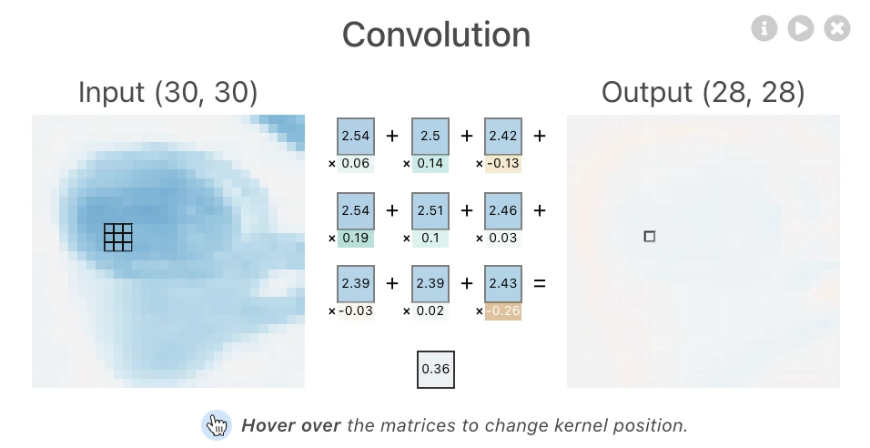
卷积的超参数 (Hyperparameters)
在设计卷积层时，通常需要设定以下关键超参数，它们直接决定了输出特征图（Feature Map）的尺寸：
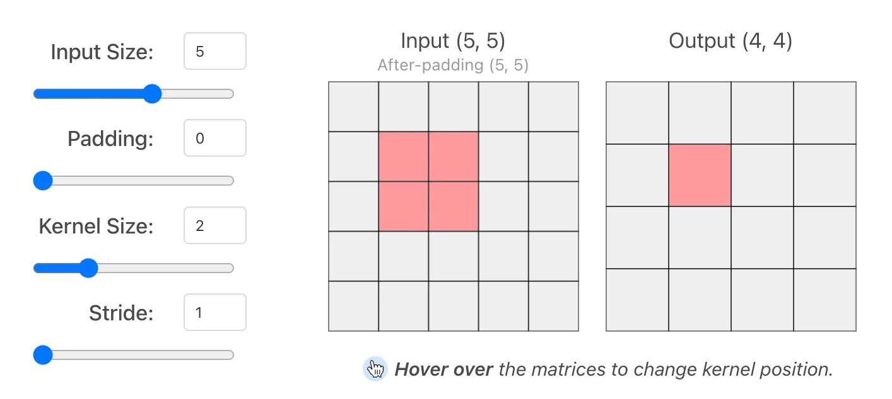
- Input Size / Channels：输入图像的尺寸（如 \(32 \times 32\)）和通道数（如 RGB 3 通道）。
- Kernel Size：卷积核大小，常见的有 \(3 \times 3\), \(5 \times 5\), \(7 \times 7\) 等。
- Stride：步长，即卷积核在图像上每次滑动的像素距离。步长越大，输出的尺寸越小。
- Padding：填充，即在原输入图像的边缘周围补充像素（通常补 0，即 Zero-Padding）。作用是防止图像边缘信息在逐层卷积中丢失，并能控制输出尺寸（例如保持输入输出同尺寸）。
特征图输出尺寸计算公式：假设输入矩阵尺寸为 \(W \times W\)，卷积核大小为 \(K \times K\)，步长为 \(S\)，填充圈数为 \(P\)，则输出矩阵的尺寸 \(O \times O\) 计算如下： \[ O = \lfloor \frac{W - K + 2P}{S} \rfloor + 1 \]
多通道输入与多组卷积核
- 多通道输入：如果输入是彩色图像（如 RGB 3
通道），那么对应的每个卷积核也必须是 3 通道的。卷积时，3
个通道分别进行内积求和，最后合并为一个标量输出。
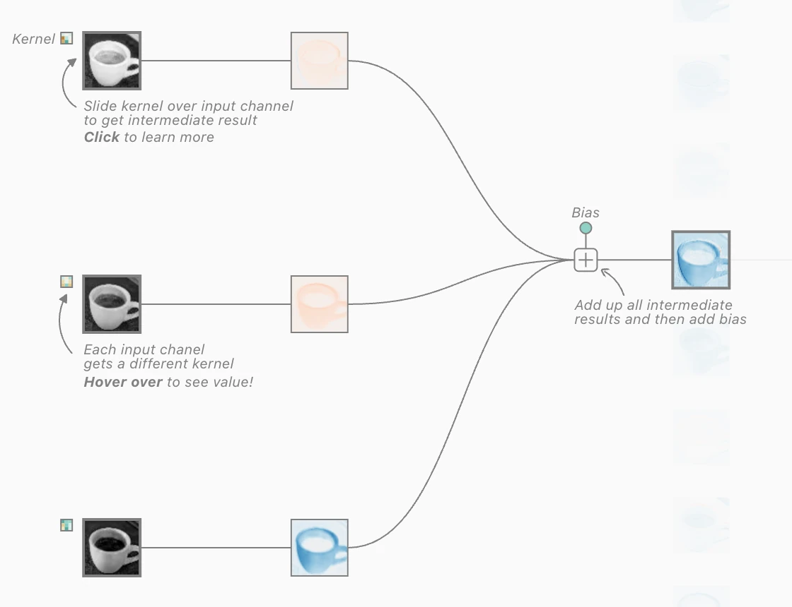
- 多组卷积核：一组卷积核对应提取一种特定的特征。
- 例如，输入一张 3 通道图像，如果我们使用 6 组 不同的 3 通道卷积核，最终就能输出一个 6 通道 的特征图 (Feature Map)。
池化层 (Pooling / Subsample)
- 核心思想：通过下采样（Subsampling）来压缩数据量和参数量，进一步提升特征的平移不变性，并扩大后续卷积层的感受野（Receptive Field）。
- 常见类型：
- Max
Pool：最大池化，提取感受野窗口内的最大值，最常用于保留最显著的特征（如边缘或纹理）。
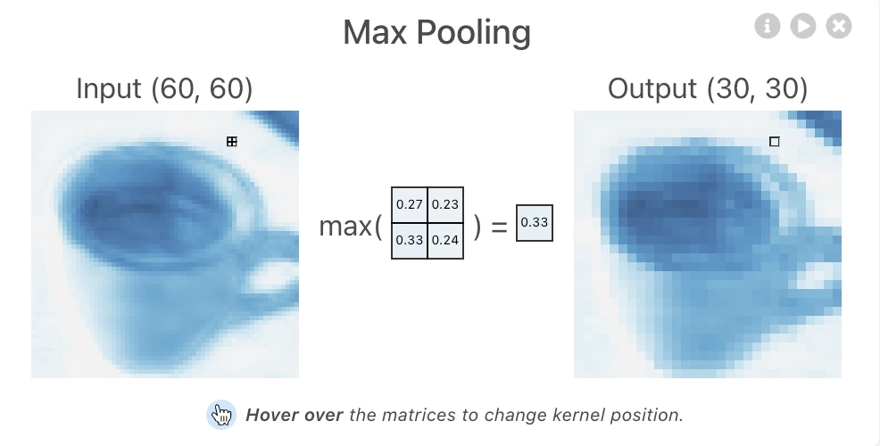
- Mean/Average Pool：平均池化，提取感受野窗口内的平均值，常用于保留整体的背景信息。
- Max
Pool：最大池化，提取感受野窗口内的最大值，最常用于保留最显著的特征（如边缘或纹理）。
多层卷积网络结构与特征可视化
- 一般设计思路：输入图像 \(\to\) [卷积层 + 激活函数 (如 ReLU)] \(\to\) 池化层 \(\to\) …循环重复… \(\to\) 全连接层 \(\to\) 输出
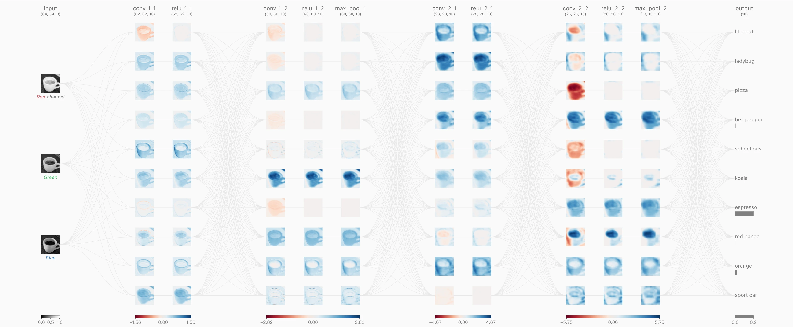
- 经典架构举例：LeNet（最初用于手写数字识别的早期经典 CNN）。
- 卷积核的可视化（深层网络的黑盒解释）：
- 第一层 (Layer 1)：作为边缘和颜色的探测器，捕捉最基础的像素渐变。
- 第二层 (Layer 2)：组合第一层结果，激活为特定的纹理（如条纹、网格）。
- 第三层及以上 (Layer 3+)：组合纹理，激活为复杂的形状和对象轮廓（如车轮、文本字符、人脸特征等）。
第一代序列模型
序列模型研究动因 (Motivation)
序列数据
- 序列数据：按固定先后顺序排列、元素之间存在时序或位置依赖关系的一组数据，数据的先后顺序往往承载着关键信息。
- 序列数据广泛存在于各个领域：
- 自然语言 / 语音：文本或语音是一连串单词或音节的组合。
- 程序语言：代码逻辑高度依赖上下文与严格的语法序列。
- 时间序列预测：如股票交易价格走势、天气预温预测等。
传统网络为何不适用
- 全连接网络 (FNN)
作为“万金油”，在处理序列时存在瓶颈：
- 缺乏时间记忆：假设要输入前 9 天的温度来预测第 10 天，FNN 只能把这 9 天的特征展开输入。它无法感知“第 1 天”和“第 9 天”在时间维度上的递进关系。
- 无法处理变长输入：FNN 的输入维度是固定的，而现实中的句子、语音等序列长度往往不一。
- 卷积神经网络 (CNN) 适合计算机视觉，它通过一维卷积（1D-CNN）也可以处理一定长度的序列。但它的局限性在于其感受野大小固定，仅能捕捉局部特征，难以建立长距离的依赖关系。
序列的本质特点
- 局部相关性 (Local Connection)：一维空间中邻近的 Token 相关性较高。
- 上下文依赖 (Context)：当前 Token 不仅取决于前面的 Token，甚至和后面的 Token 也有关。
- 长距离依赖 (Long Dependency)：序列可能会很长。例如在一大段歌词文本中，代词“他”可能指代的是几句话之前出现的主语。
循环神经网络 (RNN, Recurrent Neural Network)
RNN 的核心思想是引入“记忆”能力：在网络每一步执行相同的任务（参数共享），并且当前时刻的输出不仅依赖于当前的输入，还依赖于过去的计算结果（即状态向量 / 记忆向量）。
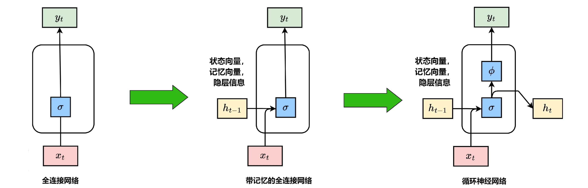
前向计算
- 假设时刻为 \(t\)，当前输入为 \(x_t\)，隐层状态（即隐层神经元活性值）为
\(h_t\)。
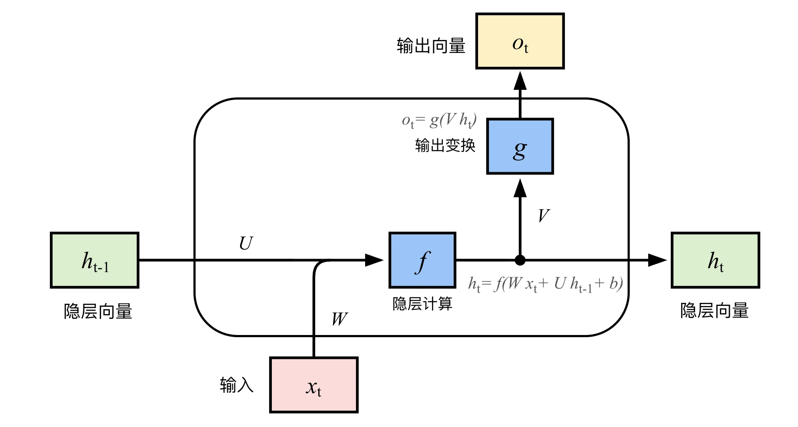
- \(h_t\) 不仅和当前时刻的输入 \(x_t\) 相关，也和上一个时刻的隐层状态 \(h_{t-1}\) 相关。 \[
h_t = f(W x_t + U h_{t-1} + b),\quad o_t = g(V h_t)
\]
- \(U\)：状态-状态权重矩阵（传递历史记忆）；
- \(W\)：状态-输入权重矩阵（提取当前特征）；
- \(V\)：输出权重矩阵；
- \(f(\cdot)\) 与 \(g(\cdot)\) 为非线性激活函数（通常为 logistic/sigmoid/tanh）。
- 如果我们把隐藏层公式不断向下展开，可以看出 RNN 的当前隐层 \(h_t\) 以及输出层 \(o_t\) 理论上蕴含了序列前 \(t\) 个时刻所有的输入信息。
反向传播
- BPTT (Backpropagation Through Time) 算法将 RNN 看作是一个按时间步展开的“多层前馈网络”，每一层对应一个时刻，因此循环神经网络就可以按照前馈网络中的反向传播算法进行参数梯度计算。
- 由于展开的前馈网络中，所有层的参数是共享的，因此某个参数的真实梯度是所有“展开层”参数梯度的总和。
循环神经网络的工作模式
- 一对一 (One-to-One)：单一输入，单一输出。
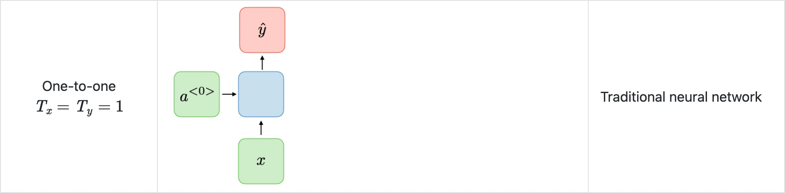
- 一对多
(One-to-Many)：单一输入，序列输出。常用于音乐生成、图片描述生成。
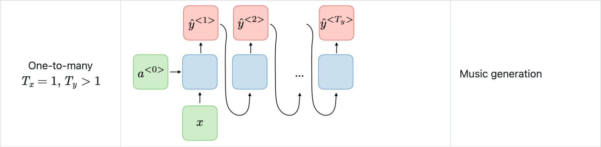
- 多对一
(Many-to-One)：序列输入，单一输出。常用于情感分类（看完一段长文本，给出一个综合情感得分）。
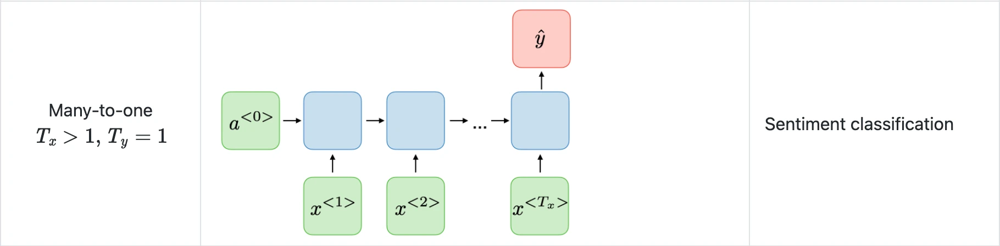
- 多对多 (Many-to-Many)：
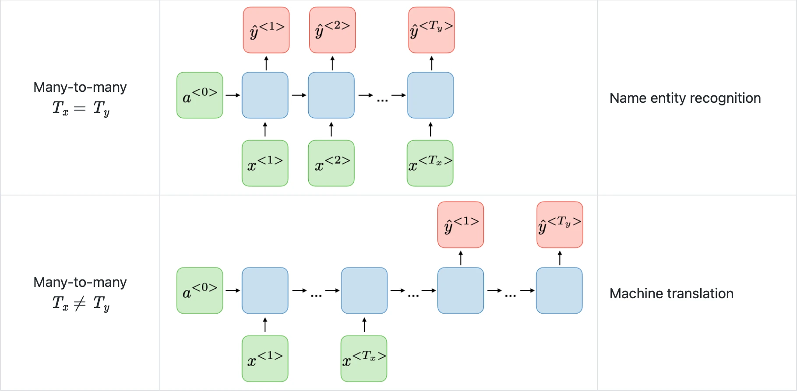
- 等长多对多：如词性标注。
- Seq2Seq 编码-解码结构：输入序列和输出序列长度不同，常用于机器翻译、智能问答 (QA)。
RNN 的致命问题：梯度爆炸与梯度消失
当序列极长时，RNN 梯度在 BPTT 反向传播时需要经过多次连乘。连乘因子如果略大于 1，会导致梯度爆炸 (Exploding Gradient)；如果略小于 1，会导致梯度消失 (Vanishing Gradient)。
- 梯度爆炸：相对容易解决，通常通过 权重衰减 (Weight Decay) 或 梯度截断 (Gradient Clipping) 来硬性避免。
- 梯度消失：是标准 RNN 的核心顽疾。它导致网络无法“记住”很久之前的输入（丢失了 Long Dependency）。由于依靠常规优化技巧难以根治，我们必须改变模型结构。
LSTM 与 GRU
LSTM (Long Short-Term Memory)
- 为了解决梯度消失问题，长短期记忆网络 LSTM 对标准 RNN
做了革命性的改进：
- 细胞状态 (Cell State, \(c_t\))：区别于短期隐层状态 \(h_t\)，这是网络的主干道，用来记录长期的历史信息。
- 门机制 (Gate)：让网络自己学习决定保留还是抛弃哪些信息，通过门结构来去除或增加信息到细胞状态中。
- 输入输出对比：标准 RNN 只有 2 个输入(\(x_t, h_{t-1}\)) 和 1 个输出；而 LSTM 的处理单元有 3 个输入 (\(x_t, h_{t-1}, c_{t-1}\))，2 个输出 (\(h_t, c_t\))。
- LSTM 内部包含三个控制门：
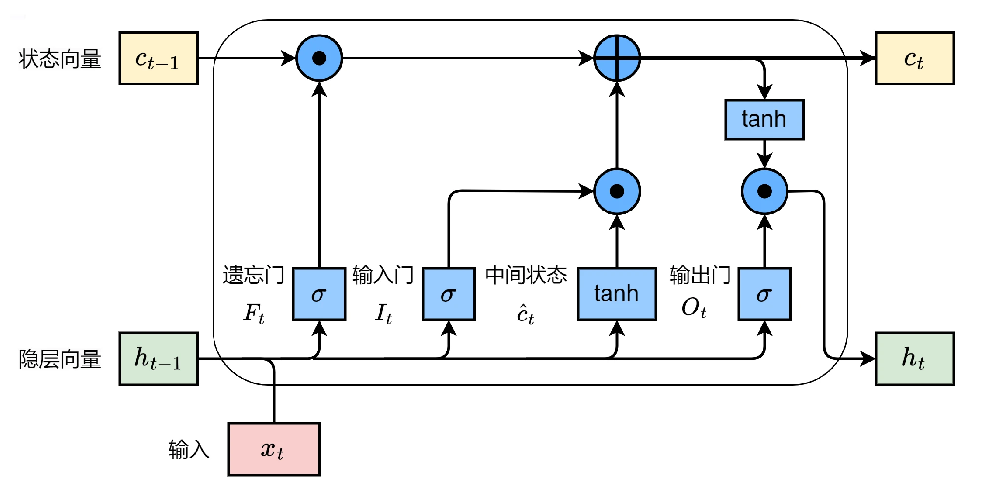
- 遗忘门 \(F_t\)：决定上一时刻的细胞状态 \(c_{t-1}\) 有多少要被保留（控制信息的遗忘）。 \[ F_t = \sigma(x_t W_{xf} + h_{t-1} W_{hf} + b_f) \]
- 输入门 \(I_t\)：决定当前时刻的新计算状态 \(\hat{c}_t\) 有多少需要更新到细胞状态中。 \[ \begin{aligned} I_t &= \sigma(x_t W_{xi} + h_{t-1} W_{hi} + b_i) \\ \hat{c}_t &= \tanh(x_t W_{xc} + h_{t-1} W_{hc} + b_c) \end{aligned} \]
- 更新细胞状态 \(c_t\)：结合遗忘和输入。 \[
c_t = F_t \odot c_{t-1} + I_t \odot \hat{c}_t
\]
- 注：\(\odot\) 表示按元素相乘。这个加法操作极为关键，它将标准 RNN 中的连乘转化为加法运算，是 LSTM 解决梯度消失的根本原因。
- 输出门 \(O_t\)：决定当前的细胞状态有多少可以输出给下一层或隐层状态 \(h_t\)。 \[ \begin{aligned} O_t &= \sigma(x_t W_{xo} + h_{t-1} W_{ho} + b_o) \\ h_t &= O_t \odot \tanh(c_t) \end{aligned} \]
GRU (Gated Recurrent Unit)
- GRU 是 LSTM 的一种流行变体：
- 将细胞状态 \(c_t\) 和隐藏状态 \(h_t\) 合并
- 将门控简化为两个：
- 重置门 (Reset Gate, \(R_t\))
- 更新门 (Update Gate, \(Z_t\))
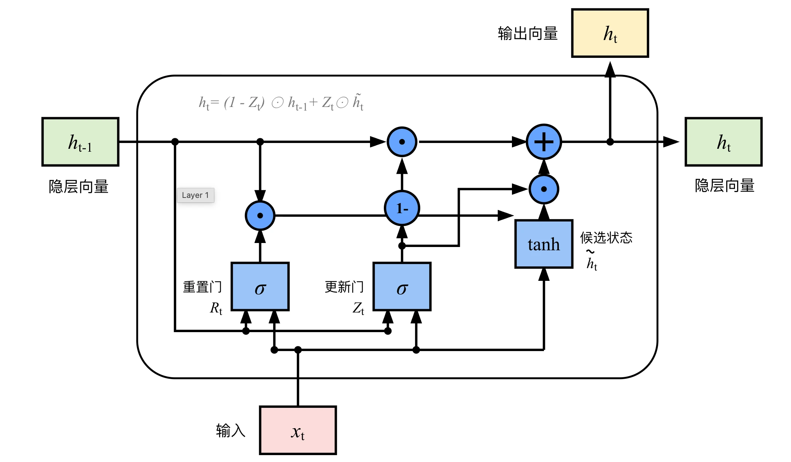
- 相比 LSTM，GRU 参数更少，计算效率更高，而在很多任务上性能相当。
双向循环神经网络 (Bi-RNN)
- 标准 RNN 是从左到右单向处理序列，只能“看到”过去的单词。但在自然语言中，当前单词的含义往往也依赖于它后面的单词。
- Bi-RNN
原理：并行维护两套独立的隐藏层状态，一个正向
(从前向后) 传递，另一个反向 (从后向前)
传递。当前步的输出同时结合了这两套状态的信息。
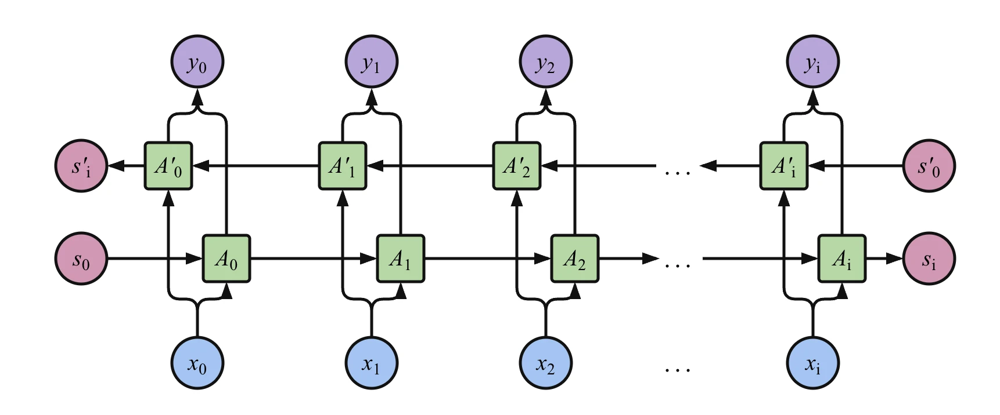
序列模型的局限性
- 难以并行化：因为 \(h_t\) 的计算必须等待 \(h_{t-1}\) 完成，时间上的严格顺序依赖导致其无法像 CNN 那样在 GPU 上进行大规模并行加速。
- 记忆力依然有限：虽然 LSTM 缓解了梯度消失，但由于信息全部被压缩在固定大小的向量 \(c_t\) 和 \(h_t\) 中，当序列特别长（如整本书）时，依然面临信息丢失的瓶颈（这也是后续 Attention 注意力机制诞生的背景）。
第二代序列模型-Transformer
Transformer 研究动因
- 背景：在 2017 年之前，NLP 任务（如机器翻译）以及
Seq2Seq 架构大多由 RNN / LSTM 统治。
- Sequence to Sequence (Seq2Seq) 模型通常由一个 RNN 编码器和一个 RNN
解码器组成，编码器将输入序列压缩成一个固定长度的上下文向量，解码器根据这个向量生成输出序列。
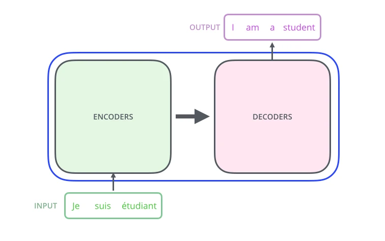
- Sequence to Sequence (Seq2Seq) 模型通常由一个 RNN 编码器和一个 RNN
解码器组成，编码器将输入序列压缩成一个固定长度的上下文向量，解码器根据这个向量生成输出序列。
- 颠覆性创新：2017 年 Google 发表了著名的论文 “Attention is All you need”，提出了一种完全摒弃 RNN 和 CNN 结构、直接基于自注意力机制 (Self-Attention) 的网络架构——Transformer，并在当时的机器翻译任务上取得了 SOTA (State of the Art)。
- 统一的底座：Transformer 最初设计用于处理序列数据，但如今它已经跨越了模态，成为了大量先进视觉模型 (Vision)、自然语言处理 (NLP) 和 大语言模型 (LLM) 的通用底层基石。
Transformer 模型设计
整体架构演变
Transformer 本质上是一个 Sequence to Sequence 模型，包含编码器和解码器。根据任务的不同，其架构演变出了三大主流分支：
- 原始 Transformer (Encoder-Decoder)：用于机器翻译等
Seq2Seq 任务。
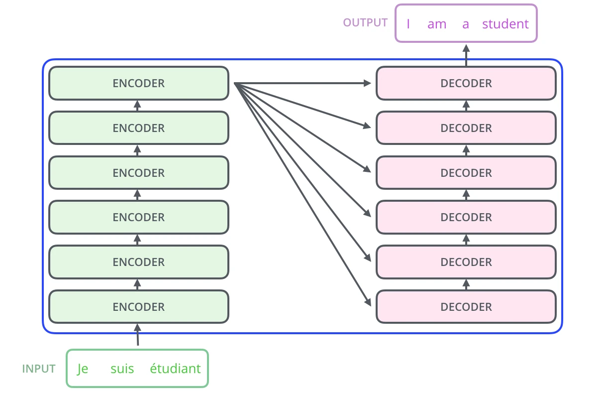
- BERT (Encoder only)：提取上下文双向特征，常用于文本理解、分类、实体识别任务。
- GPT (Decoder only)：单向自回归生成，是现代大语言模型（如 ChatGPT, LLaMA 等）的通用架构。
核心模块
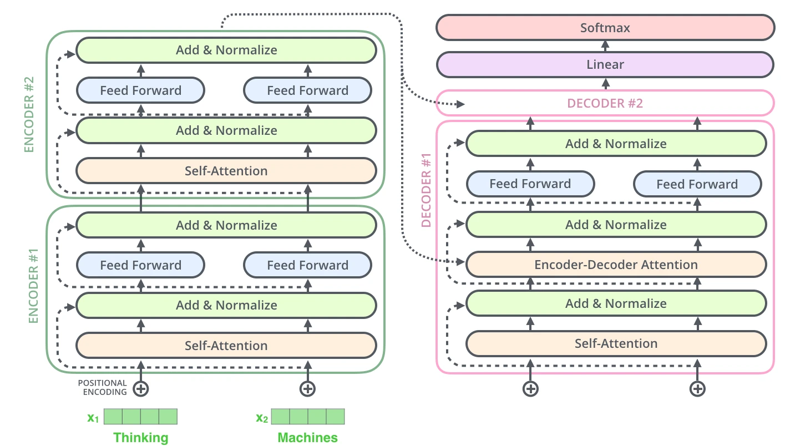
自注意力机制 (Self-Attention)
核心思想：类似于人类的注意力，在处理当前词时，模型会同时看上下文中其他的词，并为相关的词分配更高的注意力权重。
计算步骤：
- 编码器的每个输入向量（一般为词嵌入向量
Embedding）分别乘以三个在训练过程中学习到的权重矩阵 \(W^Q, W^K,
W^V\)，得到：查询向量 \(q\) (Query), 键向量 \(k\) (Key), 值向量 \(v\) (Value)。
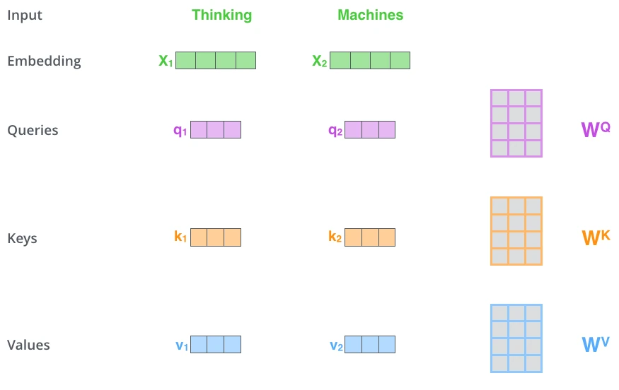
- 注：这些新向量的维度通常比原始的嵌入向量小，记为 \(d_k\)。
- 对于当前单词，对输入序列中的每一个单词（包括它自己）打分：计算当前单词的查询向量
\(q_i\) 与每个单词的键向量 \(k_i\) 的点积作为对应单词的得分：\(q_i \cdot k_j^\top\)。
- 这个得分决定了我们在编码当前位置的单词时，需要将多少“注意力”分配给序列中的其他单词。
- 缩放点积得分：\(\frac{q_i
k_j^T}{\sqrt{d_k}}\)。
- 除以 \(\sqrt{d_k}\) 可以使得在训练期间梯度更加稳定，避免点积结果过大导致后续的 Softmax 函数进入梯度极小的饱和区。
- 进行 Softmax 归一化：\(\text{Softmax}\left(\frac{q_i
k_j^T}{\sqrt{d_k}}\right)\)。
- 这个 Softmax 分数决定了在当前位置的表达中，各个单词应该占据多大的比重。
- 显然，当前单词本身的得分通常是最高的，但有时模型也会关注到与当前单词相关的其他词。
- 将每个单词的值向量 \(v_i\)
乘以各自对应的 Softmax 分数：\(\text{Softmax}\left(\frac{q_i
k_j^T}{\sqrt{d_k}}\right) v_i\)。
- 保留我们想要关注的单词的值（因为对应的值乘以了较大的分数），并淹没或削弱那些不相关的单词（因为对应的值乘以了较小的分数）。
- 对加权后的值向量求和，结果就是自注意力层在该位置（即针对第 \(i\) 个单词）的最终输出向量 \(z_i\)： \[
z_i = \sum_{j=1}^{n} \text{Softmax}\left(\frac{q_i
k_j^T}{\sqrt{d_k}}\right) v_j
\]
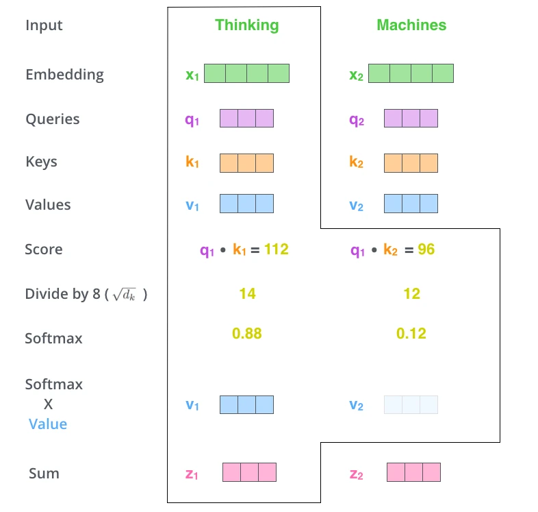
- 编码器的每个输入向量（一般为词嵌入向量
Embedding）分别乘以三个在训练过程中学习到的权重矩阵 \(W^Q, W^K,
W^V\)，得到：查询向量 \(q\) (Query), 键向量 \(k\) (Key), 值向量 \(v\) (Value)。
矩阵化运算：将上述步骤合并打包成矩阵运算，把所有的查询、键、值向量分别打包进矩阵 \(Q\)、\(K\) 和 \(V\) 中，则整个自注意力过程可以表示为： \[ Z = \text{Attention}(Q, K, V) = \text{softmax}\left(\frac{QK^T}{\sqrt{d_k}}\right)V \]
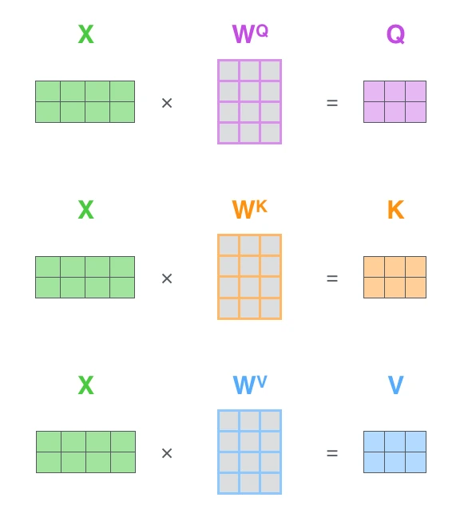
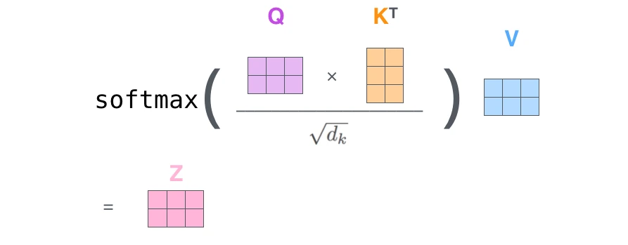
多头注意力机制 (Multi-Head Attention)
- 概念：每一步不止使用一组注意力机制，而是将 \(Q, K, V\)
拆分投射到多个低维的子空间中，分别进行 Attention 计算，最后将结果拼接
(Concat) 起来。
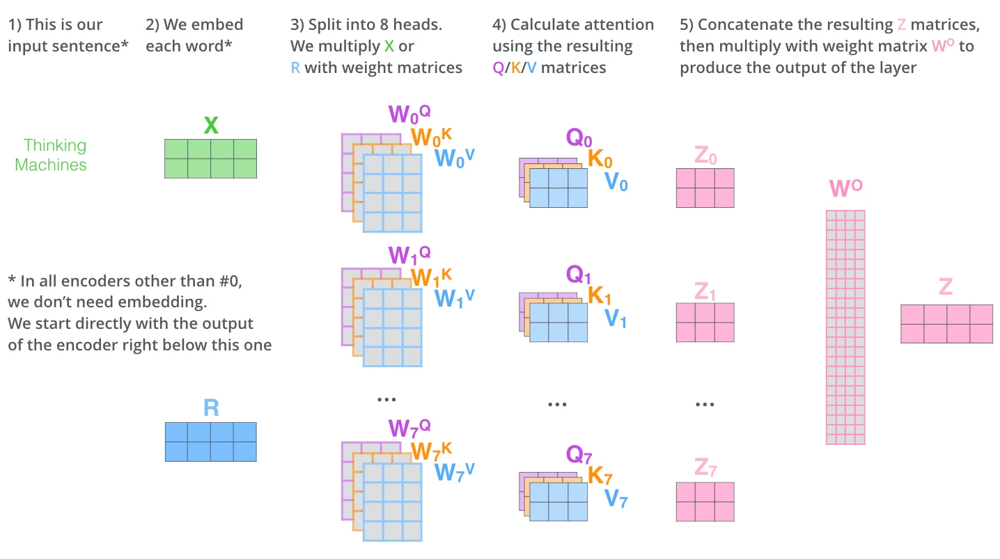
- 意义：允许模型在不同的表示子空间里“同时关注多个点”。例如，有的“头(Head)”关注语法结构，有的关注指代关系，有的关注情感极性。
残差连接与层归一化 (Add & Normalize)
在每个自注意力层（Self-Attention）和前馈神经网络层（FNN）之后，都跟着一个 Add & Normalize 模块。
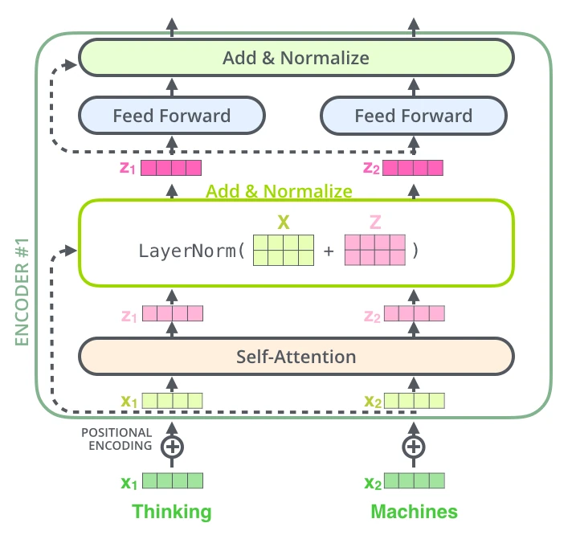
- 残差连接 (Residue Connection / Add)：
- 形式：\(x_{out} = x_{in} + \text{Layer}(x_{in})\)。
- 作用：保持正向/反向的信息流动，防止深层网络发生梯度消失。
- 层归一化 (Layer Normalization)：
- 动机：深层网络在计算时连续乘上多个矩阵，中间激活函数输出会特别不稳定（过大或过小）。
- 方式：在特征维度 (Channel) 上计算均值和方差。 \[ \hat{a} = \frac{a - \mu}{\sigma} \]
- 说明：NLP 中不用 CNN 常用的 Batch Norm（跨样本取平均），而是用 Layer
Norm（单个样本内跨特征取平均），因为句子长度往往不一。
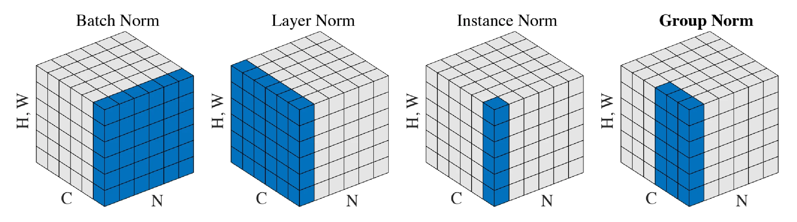
位置编码 (Positional Encoding)
- 痛点：因为 Self-Attention 只是做全连接式的全局加权，丢失了序列中 Token 的顺序信息。（对模型来说，“I have this book to read” 和 “I have to read this book” 看上去是一样的）。
- 解决方案：引入绝对/相对位置的感知。
- 三角函数位置编码：利用不同波长、不同相位差的正余弦函数，为每个位置生成一个唯一向量。
- 融合方式：直接将位置编码相加到输入序列的词嵌入向量上（Embedding
+ Position Encoding）。
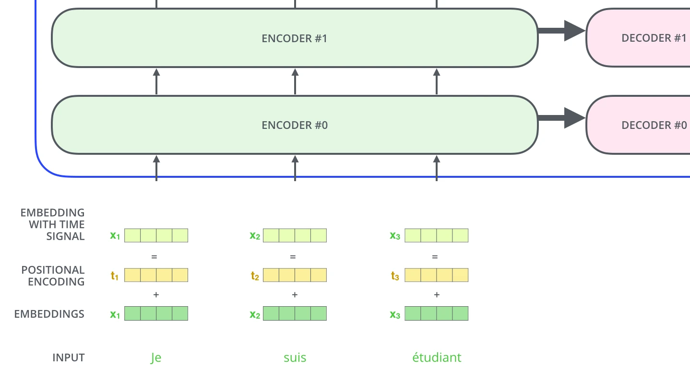
解码器 (Decoder)
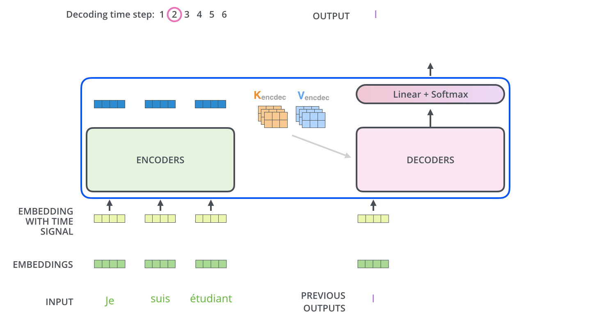
- 关键差异：解码器的整体组件与编码器非常相似，但在结构和运行机制上存在几个关键差异：
- 运行机制（自回归，Autoregressive）：编码器是一次性并行处理整个输入序列，而解码器在推理阶段是逐个 Token 生成的。当前时间步输出的词，会作为下一个时间步解码器的输入（同样需要先经过 Embedding 并加上位置编码）。
- 核心组件：每个解码器除了包含与编码器相同的自注意力层和前馈层之外，还多出了一个编码器-解码器注意力层（Encoder-Decoder Attention），并且其底层的自注意力层是掩蔽的（Masked）。
- 工作流程：
- 获取编码器输出 (Encoder Output)：最顶层编码器处理完输入序列后，其输出会被转换为一组注意力向量 \(K\) (Key) 和 \(V\) (Value)。这组向量将被“派发”给所有解码器的“编码器-解码器注意力层”使用。
- 掩蔽自注意力层 (Masked Self-Attention Layer)：
- 在生成序列时，模型只能根据已经生成的词来预测下一个词，不能提前偷看未来的词。
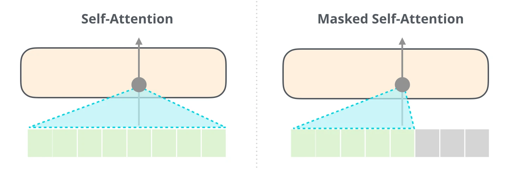
- 实现方式：在计算 Self-Attention 的得分阶段，将未来位置对应的得分掩蔽掉（Masking）。具体操作是在传给 Softmax 函数之前，把未来位置的打分设为极小的负数（如 \(-\infty\)），这样 Softmax 归一化后它们的概率就变成了 0。
- 在生成序列时，模型只能根据已经生成的词来预测下一个词，不能提前偷看未来的词。
- 编码器-解码器注意力层 (Encoder-Decoder Attention
Layer)：
- 工作机制：与普通的多头自注意力唯一的区别在于数据的来源：
- \(Q\) (Query)：来自解码器底层（即掩蔽自注意力层）的输出。
- \(K\) (Key) 和 \(V\) (Value)：直接来自编码器的顶层输出。
- 意义：这一步让解码器在生成当前词时，能够“拿着当前的查询条件（\(Q\)），去原始输入序列（\(K, V\)）中寻找最相关的上下文信息”，相当于人类翻译时“视线在原文和译文之间来回切换”的过程。
- 工作机制：与普通的多头自注意力唯一的区别在于数据的来源：
最终的线性层与 Softmax 层 (Final Linear and Softmax Layer)
解码器堆叠层的最终输出是一个由浮点数组成的向量，需要最后的线性层和 Softmax 层将这个浮点向量转换成人类能读懂的单词。
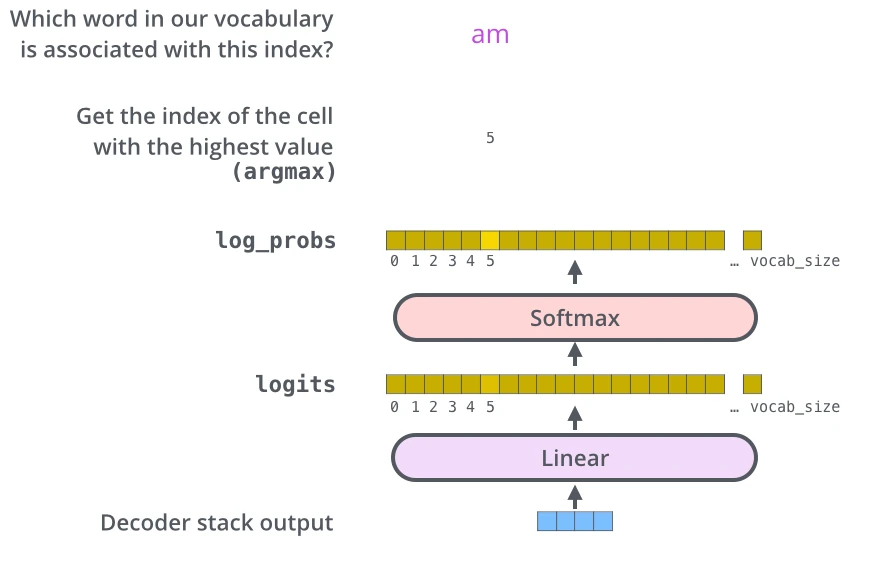
- 线性层 (Linear
Layer)：一个简单的全连接前馈神经网络。
- 将解码器输出的相对低维的特征向量投影（Project）到一个极大的向量中，这个超大向量被称为 Logits 向量。
- Logits 向量的宽度恰好等于模型所掌握的词表大小（Vocabulary Size），每一列对应的就是一个独特单词的得分。
- Softmax 层 (Softmax Layer)：
- 将 Logits 向量中各个词的原始得分转化为概率分布（所有值都为正数，且总和为 1.0）。
- 选取概率值最高的那个单元格，其对应的单词即作为该时间步模型的最终输出结果。
Transformer 的优缺点和演进方向
优缺点
- 优点：
- 长距离依赖 (Long-term Dependencies)：RNN 在长序列会有遗忘问题，而 Transformer 的任意两个 Token 之间通过 Attention 计算距离永远是 1。
- 高度并行化 (Parallelization)：RNN 的第 \(t\) 步计算依赖第 \(t-1\) 步，无法并行；Transformer 在训练时可一次性计算整句话的 Attention，大幅利用 GPU 算力。
- 全局感受野 (Global Context)：相比 CNN 受限于局部卷积核，Transformer 能无死角地获取全局信息。
- 可解释性 (Interpretability)：通过可视化 Attention Map，我们可以清晰地看到模型把重点放在了哪些词或像素上。
- 缺点：
- 计算复杂度极高：因为任意两个 Token 都要算点积，时间与空间复杂度关于序列长度 \(n\) 是 \(O(n^2)\) 的。
- 序列长度有限：因 \(O(n^2)\) 的存在，处理极长文档（如百万字小说）会导致内存爆炸。
演进方向
为了解决 Transformer \(O(n^2)\) 的计算复杂度以及大模型时代的显存墙问题，工业界和学术界提出了诸多极其关键的底层优化：
硬件感知的注意力加速：FlashAttention
- 痛点 (Memory Wall)：标准的 Attention
计算包含了多步独立的操作（Matmul \(\to\) Mask \(\to\) Softmax \(\to\) Dropout \(\to\) Matmul）。在 GPU
中，每一步都会将庞大的中间结果（大小为 \(N
\times
N\)）在计算单元（SRAM，极快但极小）和主存（HBM/DRAM，大但极慢）之间来回读写，导致极大的时间延迟（IO
瓶颈）。
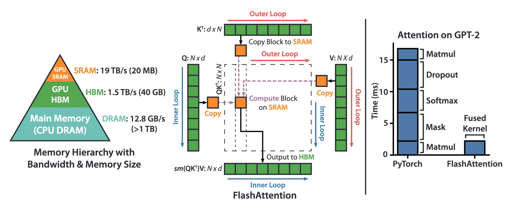
- FlashAttention 机制：
- 分块计算 (Tiling / Block computation)：将 \(Q, K, V\) 矩阵切分成小块（Blocks），分批载入到高速 SRAM 中。
- 算子融合 (Kernel Fusion)：在 SRAM 中一次性完成点积、Softmax 和加权求和，然后直接将最终输出写回 HBM，期间完全不保存任何 \(N \times N\) 的中间注意力矩阵。
- 效果：显著降低了显存读写次数，极大提升了模型训练和推理的速度，并大幅降低了显存占用。
解码推理加速核心：KV Cache
- 痛点：GPT 等 Decoder-only 架构在生成文本时是自回归（Autoregressive）的，即每次只生成一个新 Token。如果每次生成新词时，都要把前面所有历史词的 \(Q, K, V\) 重新计算一遍，会造成巨大的重复计算浪费。

- KV Cache 机制：
- KV Cache 缓存：在推理生成第 \(t\) 个 Token 时，前面 \(1\) 到 \(t-1\) 个 Token 的键矩阵 \(K\) 和值矩阵 \(V\) 是绝对不会改变的。因此，模型在内存中维护一个缓存区（KV Cache），把历史的 \(K\) 和 \(V\) 存下来。
- 当前步计算：当新 Token 进来时，只需计算这一个新 Token 的 \(Q, K, V\)。用新的 \(q_t\) 去和缓存中的所有历史 \(K\) 以及新的 \(k_t\) 做点积注意力，得到结果后再将新的 \(k_t, v_t\) 追加进缓存即可。
架构前沿演进：DeepSeek 的底层创新
面对极长上下文和海量参数，DeepSeek 等前沿技术报告提出了进一步的架构演进：
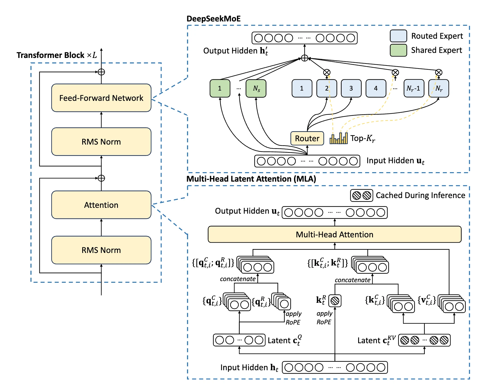
- 混合专家架构 (DeepSeekMoE)：
- 痛点：传统前向传播网络（FFN）中，每个 Token 都要经过所有的神经元，计算量巨大。
- MOE 机制：
- MoE 引入了路由器（Router）机制，包含共享专家（Shared Expert）和 路由专家（Routed Expert）。
- 路由器 (Top-\(K\)) 决定将当前 Token 仅分发给极少数最擅长处理该特征的专家网络中，实现了参数量大但计算量小的稀疏激活。
- 多头潜在注意力 (MLA, Multi-Head Latent Attention)：
- 痛点：传统的 KV Cache 在长文本推理时会占用几十上百 GB 的显存，极大限制了并发推理的数量。
- MLA 机制：
- 不再直接缓存庞大的多头 \(K\) 和 \(V\) 矩阵，而是通过一个潜空间向量 (Latent \(c_t^{KV}\)) 对 KV 进行大幅度的降维压缩，只有在推理需要时，才动态地将其投射恢复。
- 同时解耦了旋转位置编码 (RoPE) 的计算，使得极长上下文的 KV Cache 内存占用成倍下降，极大提升了推理并发量。
多任务学习
多任务学习简介 (Multi-Task Learning, MTL)
- 背景：在传统的机器学习过程中，我们往往只关心一种特定任务（Single-Task Learning），并希望模型能最大化该特定指标。然而在现实中，许多任务之间是存在强相关性的，一个任务的解决往往有利于另一个任务的解决。
- 核心思想：让模型同时学习并解决多个任务，通过共享不同任务之间的特征与表示，使得模型具有更好的泛化性能。
- 优点：
- 更好的泛化性：多任务充当了隐式的正则化项，强制模型学习到更通用的特征，避免在单个任务上过拟合。
- 少样本/零样本学习能力（Few-Shot / Zero-Shot Learning）：即使某个任务的训练样本极少，模型也可以通过“借用”其他任务学习到的通用特征来完成该任务。
- 新任务快速学习：预训练的多任务底层表示，使得模型在面对全新任务时能更快收敛。
- 难点：
- 数据集不平衡（Imbalance of datasets）：不同任务的数据量可能差异巨大，导致模型在训练时完全被数据量大的任务主导。
- 任务不相似（Dissimilarity between tasks）：如果强制让毫无关联的任务共享参数，会互相干扰。
- 负迁移（Negative transfer of knowledge）：这是 MTL 最致命的问题。各类任务之间可能存在冲突，导致联合训练后的效果反而不如各个任务单独训练。
学习方法
在深度学习中，根据参数共享的严格程度，MTL 主要分为两种基本架构：
- 硬参数共享（Hard Parameter
Sharing）：最常用、最基础的多任务学习方法。
- 结构：在网络的底部（靠近输入端）使用完全共享的隐藏层提取通用特征，在网络的顶部（靠近输出端）分叉出多个任务特定的输出层（Task-specific
layers）。
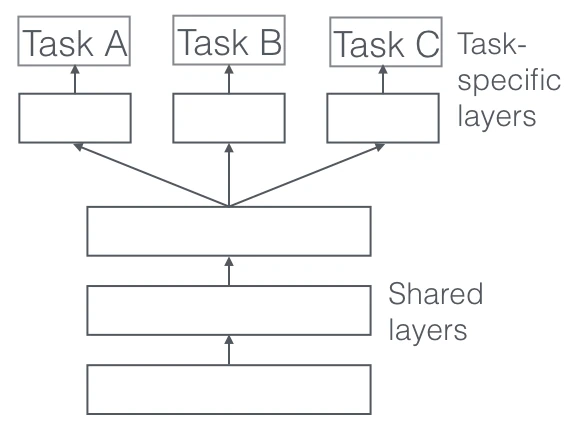
- 优势：
- 极大降低过拟合风险：学习的任务越多，模型需要照顾的面就越广，提取的特征就越具有普适性。模型很难去死记硬背某个单任务的噪声。
- 参数量少，推理效率高：相比为每个任务单独训练一个模型，Hard Sharing 极大地节省了内存和计算开销。
- 结构：在网络的底部（靠近输入端）使用完全共享的隐藏层提取通用特征，在网络的顶部（靠近输出端）分叉出多个任务特定的输出层（Task-specific
layers）。
- 软参数共享（Soft Parameter Sharing）：
- 结构：每个任务都有自己完全独立的模型和参数（不存在物理上合并的隐藏层）。
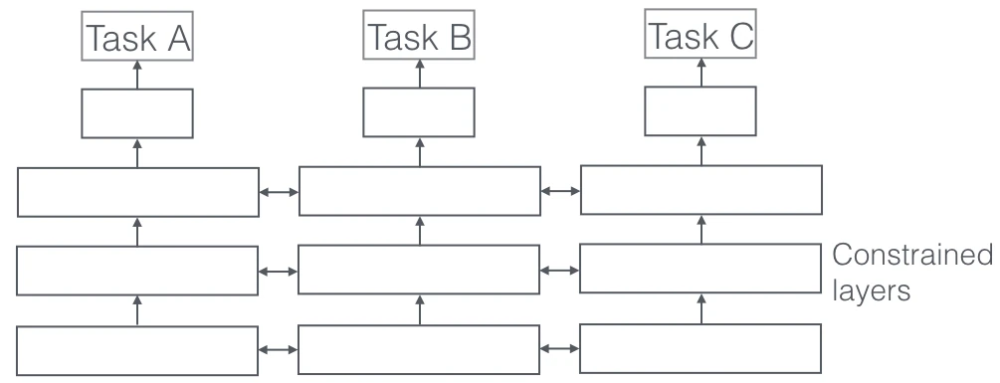
- 机制：在训练时，通过在损失函数中增加正则化约束（例如 L2 距离约束、迹范数约束等），强制不同模型的独立参数之间尽量接近或相似。
- 优势：灵活性更高，适用于任务之间相关性没有那么强（容易发生负迁移）的场景。
- 结构：每个任务都有自己完全独立的模型和参数（不存在物理上合并的隐藏层）。
训练过程
克服“灾难性遗忘” (Catastrophic Forgetting)
- 问题：如果按顺序依次训练各个任务（先训练任务 A，再用该模型训练任务 B），会遇到灾难性遗忘——模型在学习后面新任务的同时，参数被剧烈修改，完全忘记了前面任务的知识。
- 解决方案：
- 联合训练 (Joint Training)：多任务学习通常使用一个模型同时并行学习所有任务的数据，避免遗忘。
- 课程学习 (Training Curriculum)：需要制定一个好的学习计划（如控制不同阶段各任务数据的采样率和权重），以达到相互促进的目的。
前向与反向传播机制 (Forward & Backward)
在联合训练时（如自然语言处理中的文本分类+分段任务），前向传播会针对每个任务分别计算输出。
- 总损失函数 (Total Loss)：通常是将各个任务的 Loss 加权求和。 \[ L_{total} = \lambda_1 L_{task1} + \lambda_2 L_{task2} + \cdots + \lambda_k L_{task_k} \]
- 反向传播：总 Loss 的梯度会同时向后传导。共享层的参数更新方向，是所有任务梯度方向的向量和。
经典案例分析：HyperFace
HyperFace 是计算机视觉领域一个非常经典的多任务学习框架，它采用 Hard Parameter Sharing 的结构，利用一张人脸图像同时完成五个不同的任务：
- 人脸检测（Face Detection）：判断图像中是否有人脸及位置。
- 关键点定位（Landmark Localization）：定位眼睛、鼻子、嘴角等面部特征点。
- 可见度与质量评估（Visibility / Quality Estimation）：评估面部特征是否被遮挡或模糊。
- 姿态估计（Pose Estimation）：预测人脸的翻滚角（Roll）、俯仰角（Pitch）和偏航角（Yaw）。
- 性别识别（Gender Recognition）：预测男性或女性。
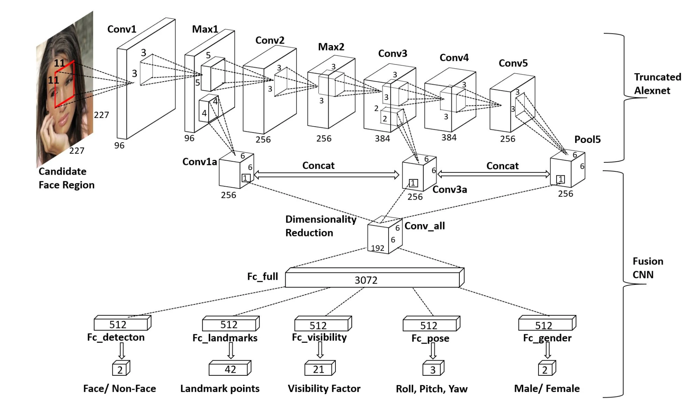
模型架构特点：- 前端使用类似 AlexNet/ResNet 的卷积特征提取器（如
Conv1到Conv5）。 - 将不同层级的特征图（浅层的边缘细节和深层的语义抽象）进行拼接（Concat & Fusion）。
- 最终接入全连接层，并在最后一层“开枝散叶”，分化出 5 个对应上述任务的特定输出分支（损失头）。
生成对抗网络
生成式模型简介
判别式模型与生成式模型
- 判别式模型：学习条件概率 \(P(Y|X)\)，直接从输入 \(X\) 预测输出 \(Y\)（如分类器）。
- 生成式模型：学习真实数据的底层概率分布 \(P(X)\)。
- 掌握了 \(P(X)\) 后，可以对判别器进行校正，解决“对抗样本”、“分布外数据 (OOV)”等问题。
- 可以通过从学习到的分布中进行采样，生成现实中不存在但极其逼真的全新样本。
自编码器 (Autoencoder)
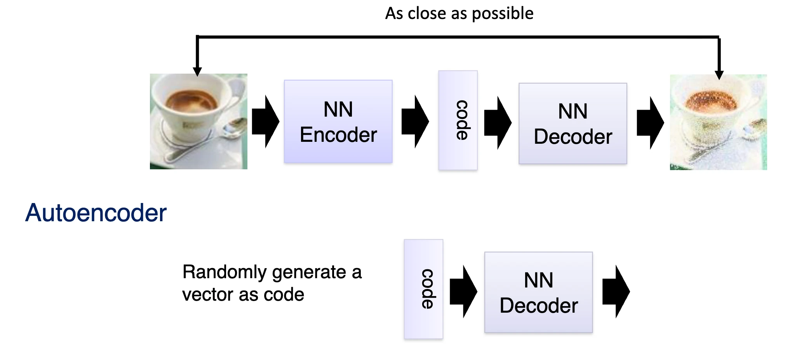
- 自编码器结构：
- 编码器（Encoder）：将高维的真实输入压缩成低维的隐变量（Code / Vector）。
- 解码器（Decoder）：将低维的隐变量重构还原为原图片。
- 目标：让输出图像与输入图像尽可能接近。
- 生成式模型的“祖师爷”：训练好自编码器之后，解码器可以把随机低维向量“翻译”成一张全新的图片（这便是变分自编码器 VAE 的雏形）。
- 核心思想：从低维的潜在空间，采样并生成高维数据。
生成对抗网络 (Generative Adversarial Networks, GAN)
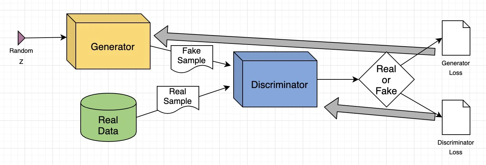
生成对抗网络由两个相互竞争的神经网络组成：
- 生成器（Generator, G）：输入一段随机噪声，通过网络生成出“假图像”。目标是尽可能骗过判别器。可视为一个反卷积网络。
- 判别器（Discriminator, D）：输入有两部分，一部分是来自训练集的“真实图像”，另一部分是生成器制造的“假图像”。目标是准确分辨真实图像和假图像。本质上是一个普通二分类网络。
图像生成：训练完成后，生成器能够从随机噪声中生成极其逼真的图像，甚至达到以假乱真的程度。
核心思想：对抗博弈，学习数据的分布。
生成对抗网络设计
核心数学优化目标 (Min-Max Game)
GAN 的训练过程可以用以下目标函数表示： \[ \min_G \max_D V(D, G) = \mathbb{E}_{x\sim p_{data}(x)}[\log D(x)] + \mathbb{E}_{z\sim p_z(z)}[\log(1 - D(G(z)))] \]
- 对于判别器 D（目标是 Maximize）：
- 当输入真实图片 \(x\) 时，它希望判定为真的概率 \(D(x)\) 越大越好，即最大化 \(\log D(x)\)。
- 当输入假图片 \(G(z)\) 时，它希望判定为真的概率 \(D(G(z))\) 越小越好，即最大化 \(\log(1 - D(G(z)))\)。
- 对于生成器 G（目标是 Minimize）：
- 无法控制与真实图片相关的第一项，只能控制与生成图片相关的第二项。
- 它希望自己生成的假图片骗过 D，即让 \(D(G(z))\) 尽可能趋近于 1，即最小化 \(\log(1 - D(G(z)))\)。
网络核心组件
为了让 GAN 能够稳定训练并生成高质量图像，通常会引入以下关键技术（常被称为 DCGAN 架构规范）：
转置卷积 (Transposed Convolution) / 反卷积 (Deconvolution)
- 生成器的任务是将 \(100\) 维的极小噪声向量，逐渐放大（上采样）成 \(28 \times 28\) 的图像。
- 转置卷积不是数学意义上严格的“逆卷积”，而是一种可以学习权重的上采样方法。通过调整 步长 (Stride) 和 填充 (Padding)，可以将特征图的宽和高逐渐放大两倍。
- 卷积与转置卷积的对比：蓝色为输入，青色为输出。动画演示
- 卷积（Convolution）：
- 对应的转置卷积（Transposed Convolution）：
批归一化 (Batch Normalization, BN)
- 痛点：深层网络在反向传播时极易陷入梯度消失问题，特别是当使用了 Sigmoid 或 Tanh 作为激活函数时，输入值一旦偏大或偏小，就会落入饱和区 ，导致梯度为零 (Zero gradient)。
- 作用：在每一层对 Mini-batch 的特征计算均值 \(\mu_B\) 和方差 \(\sigma_B^2\)，将特征强行拉回到均值为 0，方差为 1 的标准正态分布中。这保证了数据始终落在激活函数的高梯度线性区域，极大加速了收敛并防止崩溃。
条件生成对抗网络 (Conditional GAN, cGAN)
- 问题：标准的 GAN 只能盲目地随机生成图像（例如随机生成 0~9 的数字，但你无法指定它生成数字 3）。
- 解决方式：
- 生成器端：除了输入 100 维的随机噪声外，将你想生成的类别的 One-hot label 拼接进去。
- 判别器端：在判断真假时，也将 One-hot label 拼接进图像特征中。判别器不仅要判断“图像是否逼真”，还要判断“图像是否与给定的 Label 匹配”。